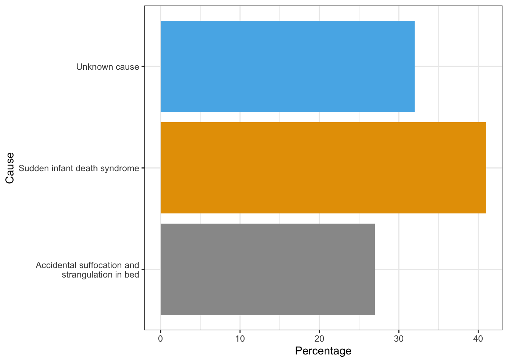
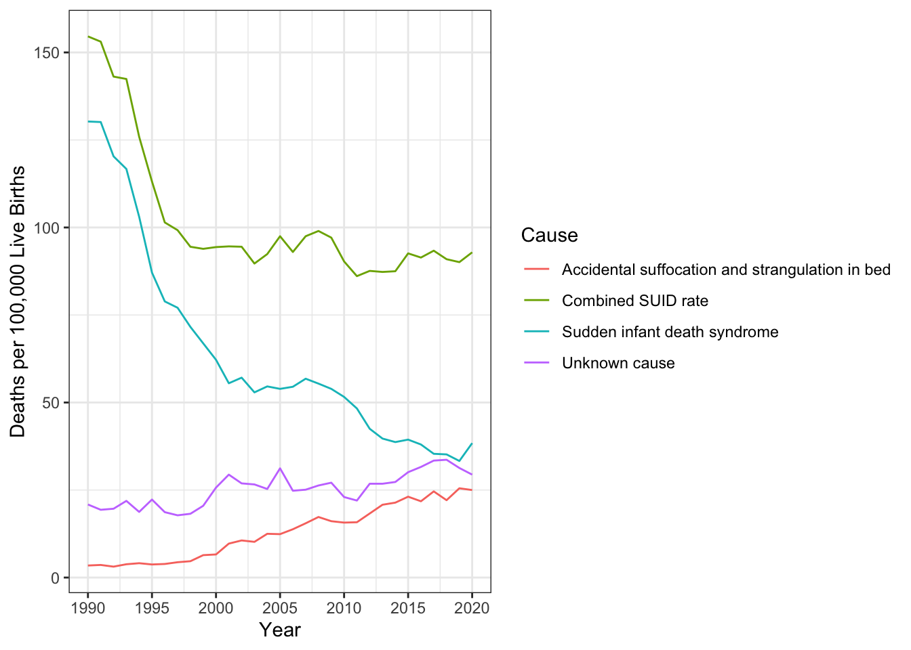

3 Infancy and Toddlerhood
We will now turn our attention to the physical, cognitive, and socioemotional development during the first two years. Researchers have given this part of the lifespan more attention than any other period, perhaps because changes during this time are so dramatic and so noticeable. We have also assumed that what happens during these years provides a foundation for one’s life to come. However, it has been argued that the significance of development during these years has been overstated (Bruer, 1999).
3.1 Physical Development in Infancy and Toddlerhood
Summarize overall physical growth during infancy
Describe the growth of the brain during infancy
Explain infant sleep
Identify newborn reflexes
Compare gross and fine motor skills
Contrast development of the senses in newborns
Describe the habituation procedure
Explain the merits of breastfeeding and when to introduce more solid foods
Discuss the nutritional concerns of marasmus and kwashiorkor
Overall Physical Growth: The average newborn in the United States weighs about 7.5 pounds (between 5 and 10 pounds) and is about 20 inches in length. For the first few days of life, infants typically lose about 5 percent of their body weight as they eliminate waste and get used to feeding. This often goes unnoticed by most parents but can be cause for concern for those who have a smaller infant. This weight loss is temporary, however, and is followed by a rapid period of growth. By the time an infant is 4 months old, it usually doubles in weight and by one year has tripled the birth weight. By age 2, the weight has quadrupled, so we can expect that a 2-year-old should weigh between 20 and 40 pounds. The average length at one year is about 29.5 inches and at two years it is around 34.4 inches (Bloem, 2007).
Body Proportions: Another dramatic physical change that takes place in the first several years of life is the change in body proportions. The head initially makes up about 50 percent of our entire length when we are developing in the womb. At birth, the head makes up about 25 percent of our length, and by age 25 it comprises about 20 percent our length.
3.1.1 The Brain in the First Two Years
Some of the most dramatic physical change that occurs during this period is in the brain. We are born with most of the brain cells that we will ever have; that is, about 85 billion neurons whose function is to store and transmit information (Huttenlocher & Dabholkar, 1997). While most of the brain’s neurons are present at birth, they are not fully mature. During the next several years dendrites, or branching extensions that collect information from other neurons, will undergo a period of exuberance. Because of this proliferation of dendrites, by age two a single neuron might have thousands of dendrites. Synaptogenesis, or the formation of connections between neurons, continues from the prenatal period forming thousands of new connections during infancy and toddlerhood. This period of rapid neural growth is referred to as synaptic blooming.
The blooming period of neural growth is then followed by a period of synaptic pruning, where neural connections are reduced thereby making those that are used much stronger. It is thought that pruning causes the brain to function more efficiently, allowing for mastery of more complex skills (Kolb & Whishaw, 2011). Experience will shape which of these connections are maintained and which of these are lost. Ultimately, about 40 percent of these connections will be lost (Webb, Monk, and Nelson, 2001). Blooming occurs during the first few years of life, and pruning continues through childhood and into adolescence in various areas of the brain.
Another major change occurring in the central nervous system is the development of myelin, a coating of fatty tissues around the axon of the neuron (Carlson, 2014). Myelin helps insulate the nerve cell and speed the rate of transmission of impulses from one cell to another. This enhances the building of neural pathways and improves coordination and control of movement and thought processes. The development of myelin continues into adolescence but is most dramatic during the first several years of life.
The infant brain grows very fast. At birth the brain is about 250 grams (half a pound) and by one year it is already 750 grams (Eliot, 1999). Comparing to adult size, the newborn brain is approximately 33% of adult size at birth, and in just 90 days, it is already at 55% of adult size (Holland et al., 2014). Most of the neural activity is occurring in the cortex or the thin outer covering of the brain involved in voluntary activity and thinking. The cortex is divided into two hemispheres, and each hemisphere is divided into four lobes, each separated by folds known as fissures. If we look at the cortex starting at the front of the brain and moving over the top (see Figure 3.3), we see first the frontal lobe (behind the forehead), which is responsible primarily for thinking, planning, memory, and judgment. Following the frontal lobe is the parietal lobe, which extends from the middle to the back of the skull and which is responsible primarily for processing information about touch. Next is the occipital lobe, at the very back of the skull, which processes visual information. Finally, in front of the occipital lobe, between the ears, is the temporal lobe, which is responsible for hearing and language (Jarrett, 2015).
Although the brain grows rapidly during infancy, specific brain regions do not mature at the same rate. Primary motor areas develop earlier than primary sensory areas, and the prefrontal cortex, that is located behind the forehead, is the least developed (Giedd, 2015). As the prefrontal 74
cortex matures, the child is increasingly able to regulate or control emotions, to plan activities, strategize, and have better judgment. This is not fully accomplished in infancy and toddlerhood, but continues throughout childhood, adolescence and into adulthood.
Lateralization is the process in which different functions become localized primarily on one side of the brain. For example, in most adults the left hemisphere is more active than the right during language production, while the reverse pattern is observed during tasks involving visuospatial abilities (Springer & Deutsch, 1993). This process develops over time, however, structural asymmetries between the hemispheres have been reported even in fetuses (Chi, Dooling, & Gilles, 1997; Kasprian et al., 2011) and infants (Dubois et al., 2009).
Lastly, neuroplasticity refers to the brain’s ability to change, both physically and chemically, to enhance its adaptability to environmental change and compensate for injury. The control of some specific bodily functions, such as movement, vision, and hearing, is performed in specified areas of the cortex, and if these areas are damaged, the individual will likely lose the ability to perform the corresponding function. The brain’s neurons have a remarkable capacity to reorganize and extend themselves to carry out these particular functions in response to the needs of the organism, and to repair any damage. As a result, the brain constantly creates new neural communication routes and rewires existing ones. Both environmental experiences, such as stimulation and events within a person’s body, such as hormones and genes, affect the brain’s plasticity. So too does age. Adult brains demonstrate neuroplasticity, but they are influenced less extensively than those of infants (Kolb & Fantie, 1989; Kolb & Whishaw, 2011).
3.1.2 Infant Sleep
A newborn typically sleeps approximately 16.5 hours per 24-hour period. This is usually polyphasic sleep in that the infant is accumulating the 16.5 hours over several sleep periods throughout the day (Salkind, 2005). The infant is averaging 15 hours per 24-hour period by one month, and 14 hours by 6 months. By the time children turn two, they are averaging closer to 10 hours per 24 hours. Additionally, the average newborn will spend close to 50% of the sleep time in the Rapid Eye Movement (REM) phase, which decreases to 25% to 30% in childhood.
Sudden Unexpected Infant Deaths (SUID): Each year in the United States, there are about 3,500 Sudden Unexpected Infant Deaths (SUID). These deaths occur among infants less than one-year-old and have no immediately obvious cause (CDC, 2019). The three commonly reported types of SUID are:
Sudden Infant Death Syndrome (SIDS): SIDS is identified when the death of a healthy infant occurs suddenly and unexpectedly, and medical and forensic investigation findings (including an autopsy) are inconclusive. SIDS is the leading cause of death in infants 1 to 12 months old, and approximately 1,400 infants died of SIDS in 2017 (CDC, 2019). Because SIDS is diagnosed when no other cause of death can be determined, possible causes of SIDS are regularly researched. One leading hypothesis suggests that infants who die from SIDS have abnormalities in the area of the brainstem responsible for regulating breathing (Weekes-Shackelford & Shackelford, 2005).
Unknown Cause: The sudden death of an infant less than one year of age that cannot be explained because a thorough investigation was not conducted, and cause of death could not be determined. In 2017, 1300 infants died from unknown causes (CDC, 2019).
Accidental Suffocation and Strangulation in Bed: Reasons for accidental suffocation include: Suffocation by soft bedding, another person rolling on top of or against the infant while sleeping, an infant being wedged between two objects such as a mattress and wall, and strangulation such as when an infant’s head and neck become caught between crib railings. In 2017, 900 infants died from accidental suffocation and strangulation. The 2017 percentages of infants who died based on each of the three types are listed in Figure 3.1.

As can be seen in the next graph Figure 3.2), the combined SUID death rate declined considerably following the release of the American Academy of Pediatrics safe sleep recommendations in 1992, which advocated that infants be placed for sleep on their backs (nonprone position). These recommendations were followed by a major Back to Sleep Campaign in 1994. However, accidental suffocation and strangulation in bed mortality rates remained unchanged until the late 1990s. In 1998 death rates from accidental suffocation and strangulation in bed actually started to increase, and they reached the highest rate at 24.6 deaths per 100,000 live births in 2017 (CDC, 2019).

Should infants be sharing the bed with parents? Colvin, Collie-Akers, Schunn and Moon (2014) analyzed a total of 8207 deaths from 24 states during 2004–2012 that were contained in the National Center for the Review and Prevention of Child Deaths Case Reporting System, a database of death reports from state child death review teams. The results indicated that younger victims (0-3 months) were more likely to die by bed-sharing and sleeping in an adult bed/on a person. A higher percentage of older victims (4 months to 364 days) rolled into objects in the sleep environment and changed position from side/back to prone. Carpenter et al. (2013) compared infants who died of SIDS with a matched control and found that infants younger than three months old who slept in bed with a parent were five times more likely to die of SIDS compared to babies who slept separately from the parents but were still in the same room. They concluded that bed sharing, even when the parents do not smoke or take alcohol or drugs, increases the risk of SIDS. However, when combined with parental smoking and maternal alcohol consumption and/or drug use, risks associated with bed sharing greatly increased.

The two studies discussed above were based on American statistics. What about the rest of the world? Co-sleeping occurs in many cultures, primarily because of a more collectivist perspective that encourages a close parent-child bond and interdependent relationship (Morelli, Rogoff, Oppenheim, & Goldsmith, 1992). In countries where co-sleeping is common, however, parents and infants typically sleep on floor mats and other hard surfaces which minimize the suffocation that can occur with bedding (Nelson, Schiefenhoevel, & Haimerl, 2000).
3.1.3 From Reflexes to Voluntary Movements
Newborns are equipped with a number of reflexes (see Some Common Infant Reflexes) which are involuntary movements in response to stimulation. Some of the more common reflexes, such as the sucking reflex and rooting reflex, are important to feeding. The grasping and stepping reflexes are eventually replaced by more voluntary behaviors. Within the first few months of life these reflexes disappear, while other reflexes, such as the eye-blink, swallowing, sneezing, gagging, and withdrawal reflex stay with us as they continue to serve important functions. Reflexes offer pediatricians insight into the maturation and health of the nervous system. Reflexes that persist longer than they should can impede normal development (Berne, 2006). In preterm infants and those with neurological impairments, some of these reflexes may be absent at birth. Once present, they may persist longer than in a neurologically healthy infant (El-Dib, Massaro, Glass & Aly, 2012).
Sucking
Suck on anything that touches the lips

Rooting
Turning the head when the cheek is touched

Grasp
Fingers automatically grip anything that touches the palm of the hand
Babinski
The toes will fan out and curl when the sole of the foot is stroked from heel to toe

Moro
A sudden noise or loss of support to the head and neck will cause infants to spread out their arms and legs then quickly contract the limbs inward

Tonic Neck When lying on the back with the head to one side infants will extend the arm and leg on that side while flexing the limbs on the opposite side (looks like a fencer pose).

Stepping Legs move in stepping like motion when feet touch a smooth surface

3.1.4
3.1.5 Motor Development
Motor development occurs in an orderly sequence as infants move from reflexive reactions (e.g., sucking and rooting) to more advanced motor functioning. As mentioned during the prenatal section, development occurs according to the Cephalocaudal (from head to tail) and Proximodistal (from the midline outward) principles. For instance, babies first learn to hold their heads up, then to sit with assistance, then to sit unassisted, followed later by crawling, pulling up, cruising or walking while holding on to something, and then unassisted walking (Eisenberg, Murkoff, & Hathaway, 1989). As motor skills develop, there are certain developmental milestones that young children should achieve. For each milestone there is an average age, as well as a range of ages in which the milestone should be reached. An example of a developmental milestone is a baby holding up its head. Babies on average are able to hold up their head at 6 weeks old, and 90% of babies achieve this between 3 weeks and 4 months old. On average, most babies sit alone at 7 months old. Sitting involves both coordination and muscle strength, and 90% of babies achieve this milestone between 5 and 9 months old. If the child is displaying delays on several milestones, that is reason for concern, and the parent or caregiver should discuss this with the child’s pediatrician. Developmental delays can be identified and addressed through early intervention.
Motor Skills refer to our ability to move our bodies and manipulate objects. Fine motor skills focus on the muscles in our fingers, toes, and eyes, and enable coordination of small actions (e.g., grasping a toy, writing with a pencil, and using a spoon). Newborns cannot grasp objects voluntarily but do wave their arms toward objects of interest. At about 4 months of age, the infant is able to reach for an object, first with both arms and within a few weeks, with only one arm. At this age grasping an object involves the use of the fingers and palm, but no thumbs. This is known as the Palmer Grasp. The use of the thumb comes at about 9 months of age when the infant is able to grasp an object using the forefinger and thumb. Now the infant uses a Pincer Grasp, and this ability greatly enhances the ability to control and manipulate an object and infants take great delight in this newfound ability. They may spend hours picking up small objects from the floor and placing them in containers. By 9 months, an infant can also watch a moving object, reach for it as it approaches, and grab it.

Gross motor skills focus on large muscle groups that control our head, torso, arms and legs and involve larger movements (e.g., balancing, running, and jumping). These skills begin to develop first. Examples include moving to bring the chin up when lying on the stomach, moving the chest up, and rocking back and forth on hands and knees. But it also includes exploring an object with one’s feet as many babies do as early as 8 weeks of age if seated in a carrier or other device that frees the hips. This may be easier than reaching for an object with the hands, which requires much more practice (Berk, 2007). Sometimes an infant will try to move toward an object while crawling and surprisingly move backward because of the greater amount of strength in the arms than in the legs.
3.1.6 Sensory Capacities
Throughout much of history, the newborn was considered a passive, disorganized being who possessed minimal abilities. William James, an early psychologist, had described the newborn’s world as “a blooming, buzzing confusion,” (Shaffer, 1985). However, current research techniques have demonstrated just how developed the newborn is with especially organized sensory and perceptual abilities.
Vision: The womb is a dark environment void of visual stimulation. Consequently, vision is one of the most poorly developed senses at birth, and time is needed to build those neural pathways between the eyes and the brain (American Optometric Association [AOA], 2019). Newborns typically cannot see further than 8 to 10 inches away from their faces (AOA, 2019). An 8-week old’s vision is 20/300. This means an object 20 feet away from an infant has the same clarity as an object 300 feet away from an adult with normal vision. By 3-months visual acuity has sharpened to 20/200, which would allow them the see the letter E at the top of a standard eye chart (Hamer, 2016). As a result, the world looks blurry to young infants (Johnson & deHaan, 2015).
Why is visual acuity so poor in the infant? The fovea, which is the central field of vision in the retina and allows us to see sharp detail, is not fully developed at birth, and does not start to reach adult levels of development until 15 months (Li & Ding, 2017). Even by 45 months some of the sensory neurons (cones) of the fovea are still not fully grown. Can babies see color? Young infants can perceive color, but the colors need to be very pure forms of basic colors, such as vivid red or green rather than weaker pastel shades. Most studies report that babies can see the full spectrum of colors by five months of age (AOA, 2019).
Newborn infants prefer and orient to face-like stimuli more than they do other patterned stimuli (Farroni et al., 2005). They also prefer images of faces that are upright and not scrambled (Chien, 2011). Infants also quickly learn to distinguish the face of their mother from faces of other women (Bartrip, Morton, & De Schonen, 2001). When viewing a person’s face, one-month olds fixate on the outer edges of the face rather than the eyes, nose, or mouth, and two-month olds gaze more at the inner features, especially the eyes (Hainline, 1978).
Researchers have examined the development of attention and tracking in the visual system and have found the following for young infants:
One-month-olds have difficulty disengaging their attention and can spend several minutes fixedly gazing at a stimulus (Johnson & deHaan, 2015).
Aslin (1981) found that when tracking an object visually, the eye movements of newborns and one-month olds are not smooth but saccadic, that is step-like jerky movements. Aslin also found their eye movements lag behind the object’s motion. This means young infants do not anticipate the trajectory of the object. By two months of age, their eye movements are becoming smoother, but they still lag behind the motion of the object and will not achieve this until about three to four months of age (Johnson & deHaan, 2015).
Newborns also orient more to the visual field toward the side of the head, than to the visual field on either side of the nose (Lewis, Maurer, & Milewski, 1979). By two to three months, stimuli in both fields are now equally attended to (Johnson & deHaan, 2015).
Binocular vision, which requires input from both eyes, is evident around the third month and continues to develop during the first six months (Atkinson & Braddick, 2003). By six months infants can perceive depth perception in pictures as well (Sen, Yonas, & Knill, 2001). Infants who have experience crawling and exploring will pay greater attention to visual cues of depth and modify their actions accordingly (Berk, 2007).
Hearing: The infant’s sense of hearing is very keen at birth, and the ability to hear is evidenced as soon as the seventh month of prenatal development. Newborns prefer their mother’s voices over another female when speaking the same material (DeCasper & Fifer, 1980). Additionally, they will register in utero specific information heard from their mother’s voice. DeCasper and Spence (1986) tested 16 infants (average age of 55.8 hours) whose mothers had previously read to them prenatally. The mothers read several passages to their fetuses, including the first 28 paragraphs of the Cat in the Hat, beginning when they were 7 months pregnant. The fetuses had been exposed to the stories an average of 67 times or 3.5 hours. When the experimental infants were tested, the target stories (previously heard) were more reinforcing than the novel story as measured by their rate of sucking. However, for control infants, the target stories were not more reinforcing than the novel story indicating that the experimental infants had heard them before.
An infant can distinguish between very similar sounds as early as one month after birth and can distinguish between a familiar and non-familiar voice even earlier. Infants are especially sensitive to the frequencies of sounds in human speech and prefer the exaggeration of infant-directed speech, which will be discussed later. Additionally, infants are innately ready to respond to the sounds of any language, but between six and nine months they show preference for listening to their native language (Jusczyk, Cutler, & Redanz, 1993). Their ability to distinguish the sounds that are not in the language around them diminishes rapidly (Cheour-Luhtanen, et al., 1995).
Touch and Pain: Immediately after birth, a newborn is sensitive to touch and temperature, and is also highly sensitive to pain, responding with crying and cardiovascular responses (Balaban & Reisenauer, 2013). Newborns who are circumcised, which is the surgical removal of the foreskin of the penis, without anesthesia experience pain as demonstrated by increased blood pressure, increased heart rate, decreased oxygen in the blood, and a surge of stress hormones (United States National Library of Medicine, 2016). Research has demonstrated that infants who were circumcised without anesthesia experienced more pain and fear during routine childhood vaccines. Fortunately, today many local pain killers are currently used during circumcision.
Taste and Smell: Studies of taste and smell demonstrate that babies respond with different facial expressions, suggesting that certain preferences are innate. Newborns can distinguish between sour, bitter, sweet, and salty flavors and show a preference for sweet flavors. Newborns also prefer the smell of their mothers. An infant only 6 days old is significantly more likely to turn toward its own mother’s breast pad than to the breast pad of another baby’s mother (Porter, Makin, Davis, & Christensen, 1992), and within hours of birth an infant also shows a preference for the face of its own mother (Bushnell, 2001; Bushnell, Sai, & Mullin, 1989).

Intermodality: Infants seem to be born with the ability to perceive the world in an intermodal way; that is, through stimulation from more than one sensory modality. For example, infants who sucked on a pacifier with either a smooth or textured surface preferred to look at a corresponding (smooth or textured) visual model of the pacifier. By 4 months, infants can match lip movements with speech sounds and can match other audiovisual events. Sensory processes are certainly affected by the infant’s developing motor abilities (Hyvärinen, Walthes, Jacob, Nottingham Chapin, & Leonhardt, 2014). Reaching, crawling, and other actions allow the infant to see, touch, and organize his or her experiences in new ways.
How are Infants Tested: Habituation procedures, that is measuring decreased responsiveness to a stimulus after repeated presentations, have increasingly been used to evaluate infants to study the development of perceptual and memory skills. Phelps (2005) describes a habituation procedure used when measuring the rate of the sucking reflex. Researchers first measure the initial baseline rate of sucking to a pacifier equipped with transducers that measure muscle contractions. Next, an auditory stimulus is presented, such as a human voice uttering a speech sound such as “da.” The rate of sucking will typically increase with the new sound, but then decrease to baseline levels as “da” is repeatedly presented, showing habituation. If the sound “ma” was then presented, the rate of sucking would again increase, demonstrating that the infant can discriminate between these two stimuli.
Additionally, the speed or efficiency with which infants show habituation has been shown to predict outcomes in behaviors, such as language acquisition and verbal and nonverbal intelligence. Infants who show difficulty during habituation, or habituate at slower than normal rates, have been found to be at an increased risk for significant developmental delays. Infants with Down syndrome, teratogen-exposed infants, malnourished infants, and premature infants have all been studied. Researchers have found that at the age of 16 months, high-risk infants show rates of habituation comparable to newborn infants (Phelps, 2005).
3.1.7 Nutrition
Breast milk is considered the ideal diet for newborns. Colostrum, the first breast milk produced during pregnancy and just after birth has been described as “liquid gold” (United States Department of Health and Human Services (USDHHS), 2011). It is very rich in nutrients and antibodies. Breast milk changes by the third to fifth day after birth, becoming much thinner, but containing just the right amount of fat, sugar, water, and proteins to support overall physical and neurological development. For most babies, breast milk is also easier to digest than formula. Formula fed infants experience more diarrhea and upset stomachs. The absence of antibodies in formula often results in a higher rate of ear infections and respiratory infections. Children who are breastfed have lower rates of childhood leukemia, asthma, obesity, type 1 and 2 diabetes, and a lower risk of SIDS. The USDHHS recommends that mothers breast feed their infants until at least 6 months of age, and that breast milk be used in the diet throughout the first year or two.
Several recent studies have reported that it is not just babies that benefit from breastfeeding. Breastfeeding stimulates contractions in the uterus to help it regain its normal size, and women who breastfeed are more likely to space their pregnancies further apart. Mothers who breastfeed are at lower risk of developing breast cancer (Islami et al., 2015), especially among higher risk racial and ethnic groups (Islami et al., 2015; Redondo et al., 2012). Women who breastfeed have lower rates of ovarian cancer (Titus-Ernstoff, Rees, Terry, & Cramer, 2010), reduced risk for developing Type 2 diabetes (Schwarz et al., 2010; Gunderson, et al., 2015), and rheumatoid arthritis (Karlson, Mandl, Hankinson, & Grodstein, 2004). In most studies these benefits have been seen in women who breastfeed longer than 6 months.
Current rates of breastfeeding indicate that 83.2% of mothers have breastfed their infants at some point (CDC, 2018). However, most mothers who breastfeed in the United States stop breastfeeding exclusively at about 6-8 weeks, often in order to return to work outside the home (USDHHS, 2011). Mothers can certainly continue to provide breast milk to their babies by expressing and freezing the milk to be bottle fed at a later time or by being available to their infants at feeding time. However, some mothers find that after the initial encouragement they receive in the hospital to breastfeed, the outside world is less supportive of such efforts. Some workplaces support breastfeeding mothers by providing flexible schedules and welcoming infants, but many do not. In addition, not all women may be able to breastfeed. Women with HIV are routinely discouraged from breastfeeding as the infection may pass to the infant. Similarly, women who are taking certain medications or undergoing radiation treatment may be told not to breastfeed (USDHHS, 2011).
Besides the nutritional benefits of breastfeeding, breast milk is free. Anyone who has priced formula recently can appreciate this added incentive to breastfeeding. Prices for a year’s worth of formula and feeding supplies can cost between $1,500 and $3000 per year (Los Angles County Department of Public Health, 2019). In addition to the formula, costs include bottles, nipples, sterilizers, and other supplies.
One early argument given to promote the practice of breastfeeding was that it promoted bonding and healthy emotional development for infants. However, this does not seem to be the case. Breastfed and bottle-fed infants adjust equally well emotionally (Ferguson & Woodward, 1999). This is good news for mothers who may be unable to breastfeed for a variety of reasons and for fathers who might feel left out.
When to Introduce More Solid Foods: Solid foods should not be introduced until the infant is ready. According to The Clemson University Cooperative Extension (2014), some things to look for include that the infant:
can sit up without needing support
can hold its head up without wobbling
shows interest in foods others are eating
is still hungry after being breastfed or formula fed
is able to move foods from the front to the back of the mouth
is able to turn away when they have had enough
For many infants who are 4 to 6 months of age, breast milk or formula can be supplemented with more solid foods. The first semi-solid foods that are introduced are iron-fortified infant cereals mixed with breast milk or formula. Typically rice, oatmeal, and barley cereals are offered as a number of infants are sensitive to more wheat-based cereals. Finger foods such as toast squares, cooked vegetable strips, or peeled soft fruit can be introduced by 10-12 months. New foods should be introduced one at a time, and the new food should be fed for a few days in a row to allow the baby time to adjust to the new food. This also allows parents time to assess if the child has a food allergy. Foods that have multiple ingredients should be avoided until parents have assessed how the child responds to each ingredient separately. Foods that are sticky (such as peanut butter or taffy), cut into large chunks (such as cheese and harder meats), and firm and round (such as hard candies, grapes, or cherry tomatoes) should be avoided as they are a choking hazard. Honey and corn syrup should be avoided as these often contain botulism spores. In children under 12 months, this can lead to death (Clemson University Cooperative Extension, 2014).
3.1.8 Global Considerations and Malnutrition
Children in developing countries and countries experiencing the harsh conditions of war are at risk for two major types of malnutrition, also referred to as wasting. Infantile marasmus refers to starvation due to a lack of calories and protein. Children who do not receive adequate nutrition lose fat and muscle until their bodies can no longer function. Babies who are breastfed are much less at risk of malnutrition than those who are bottle-fed.
After weaning, children who have diets deficient in protein may experience kwashiorkor known as the “disease of the displaced child” often occurring after another child has been born and taken over breastfeeding. This results in a loss of appetite and swelling of the abdomen as the body begins to break down the vital organs as a source of protein.
Around the world the rates of wasting have been dropping. However, according to the World Health Organization and UNICEF, in 2014 there were 50 million children under the age of five that experienced these forms of wasting, and 16 million were severely wasted (UNICEF, 2015). This works out to 1 child in every 13 children in the world suffers from some form of wasting, and the majority of these children live in Asia (34.3 million) and Africa (13.9 million). Wasting can occur as a result of severe food shortages, regional diets that lack certain proteins and vitamins, or infectious diseases that inhibit appetite (Latham, 1997).
The consequences of wasting depend on how late in the progression of the disease parents and guardians seek medical treatment for their children. Unfortunately, in some cultures families do not seek treatment early, and as a result by the time a child is hospitalized the child often dies within the first three days after admission (Latham, 1997). Several studies have reported long-term cognitive effects of early malnutrition (Galler & Ramsey, 1989; Galler, Ramsey, Salt & Archer, 1987; Richardson, 1980), even when home environments were controlled (Galler, Ramsey, Morley, Archer & Salt, 1990). Lower IQ scores (Galler et al., 1987), poor attention (Galler & Ramsey, 1989), and behavioral issues in the classroom (Galler et al., 1990) have been reported in children with a history of serious malnutrition in the first few years of life.
3.2 Cognitive Development in Infancy and Toddlerhood
Compare the Piagetian concepts of schema, assimilation, and accommodation
List and describe the six substages of sensorimotor intelligence
Describe the characteristics of infant memory
Describe components and developmental progression of language
Identify and compare the theories of language
Piaget and the Sensorimotor Stage
Schema, Assimilation and Accommodation: Piaget believed that we are continuously trying to maintain cognitive equilibrium, or a balance, in what we see and what we know (Piaget, 1954). Children have much more of a challenge in maintaining this balance because they are constantly being confronted with new situations, new words, new objects, etc. All this new information needs to be organized, and a framework for organizing information is referred to as a schema. Children develop schemata through the processes of assimilation and accommodation.
When faced with something new, a child may demonstrate assimilation, which is fitting the new information into an existing schema, such as calling all animals with four legs “doggies” because he or she knows the word doggie. Instead of assimilating the information, the child may demonstrate accommodation, which is expanding the framework of knowledge to accommodate the new situation and thus learning a new word to more accurately name the animal. For example, recognizing that a horse is different than a zebra means the child has accommodated, and now the child has both a zebra schema and a horse schema. Even as adults we continue to try and “make sense” of new situations by determining whether they fit into our old way of thinking (assimilation) or whether we need to modify our thoughts (accommodation).
According to the Piagetian perspective, infants learn about the world primarily through their senses and motor abilities (Harris, 2005). These basic motor and sensory abilities provide the foundation for the cognitive skills that will emerge during the subsequent stages of cognitive development. The first stage of cognitive development is referred to as the sensorimotor stage and it occurs through six substages. Table 3.2 identifies the ages typically associated with each substage.
Table 3.2 Infant Ages for the Six Substages of the Sensorimotor Stage
| Substage 1 | Reflexes (0–1 month) |
| Substage 2 | Primary Circular Reactions (1–4 months) |
| Substage 3 | Secondary Circular Reactions (4–8 months) |
| Substage 4 | Coordination of Secondary Circular Reactions (8–12 months) |
| Substage 5 | Tertiary Circular Reactions (12–18 months) |
| Substage 6 | Beginning of Representational Thought (18–24 months) |
Substage 1: Reflexes. Newborns learn about their world through the use of their reflexes, such as when sucking, reaching, and grasping. Eventually the use of these reflexes becomes more deliberate and purposeful.
Substage 2: Primary Circular Reactions. During these next 3 months, the infant begins to actively involve his or her own body in some form of repeated activity. An infant may accidentally engage in a behavior and find it interesting such as making a vocalization. This interest motivates trying to do it again and helps the infant learn a new behavior that originally occurred by chance. The behavior is identified as circular because of the repetition, and as primary because it centers on the infant’s own body.
Substage 3: Secondary Circular Reactions. The infant begins to interact with objects in the environment. At first the infant interacts with objects (e.g., a crib mobile) accidentally, but then these contacts with the objects are deliberate and become a repeated activity. The infant becomes more and more actively engaged in the outside world and takes delight in being able to make things happen. Repeated motion brings particular interest as, for example, the infant is able to bang two lids together from the cupboard when seated on the kitchen floor.
Substage 4: Coordination of Secondary Circular Reactions. The infant combines these basic reflexes and simple behaviors and uses planning and coordination to achieve a specific goal. Now the infant can engage in behaviors that others perform and anticipate upcoming events. Perhaps because of continued maturation of the prefrontal cortex, the infant become capable of having a thought and carrying out a planned, goal-directed activity. For example, an infant sees a toy car under the kitchen table and then crawls, reaches, and grabs the toy. The infant is coordinating both internal and external activities to achieve a planned goal.
Substage 5: Tertiary Circular Reactions. The toddler is considered a “little scientist” and begins exploring the world in a trial-and-error manner, using both motor skills and planning abilities. For example, the child might throw her ball down the stairs to see what happens. The toddler’s active engagement in experimentation helps them learn about their world.
Substage 6: Beginning of Representational Thought. The sensorimotor period ends with the appearance of symbolic or representational thought. The toddler now has a basic understanding that objects can be used as symbols. Additionally, the child is able to solve problems using mental strategies, to remember something heard days before and repeat it, and to engage in pretend play. This initial movement from a “hands-on” approach to knowing about the world to the more mental world of substage six marks the transition to preoperational thought.
Development of Object Permanence: A critical milestone during the sensorimotor period is the development of object permanence. Object permanence is the understanding that even if something is out of sight, it still exists (Bogartz, Shinskey, & Schilling, 2000). According to Piaget, young infants do not remember an object after it has been removed from sight. Piaget studied infants’ reactions when a toy was first shown to them and then hidden under a blanket. Infants who had already developed object permanence would reach for the hidden toy, indicating that they knew it still existed, whereas infants who had not developed object permanence would appear confused. Piaget emphasizes this construct because it was an objective way for children to demonstrate that they can mentally represent their world. Children have typically acquired this milestone by 8 months. Once toddlers have mastered object permanence, they enjoy games like hide and seek, and they realize that when someone leaves the room they will come back. Toddlers also point to pictures in books and look in appropriate places when you ask them to find objects.
In Piaget’s view, around the same time children develop object permanence, they also begin to exhibit stranger anxiety, which is a fear of unfamiliar people (Crain, 2005). Babies may demonstrate this by crying and turning away from a stranger, by clinging to a caregiver, or by attempting to reach their arms toward familiar faces, such as parents. Stranger anxiety results when a child is unable to assimilate the stranger into an existing schema; therefore, she cannot predict what her experience with that stranger will be like, which results in a fear response.
Critique of Piaget: Piaget thought that children’s ability to understand objects, such as learning that a rattle makes a noise when shaken, was a cognitive skill that develops slowly as a child matures and interacts with the environment. Today, developmental psychologists think Piaget was incorrect. Researchers have found that even very young children understand objects and how they work long before they have experience with those objects (Baillargeon, 1987; Baillargeon, Li, Gertner, & Wu, 2011). For example, Piaget believed that infants did not fully master object permanence until substage 5 of the sensorimotor period (Thomas, 1979). However, infants seem to be able to recognize that objects have permanence at much younger ages. Diamond (1985) found that infants show earlier knowledge if the waiting period is shorter. At age 6 months, they retrieved the hidden object if their wait for retrieving the object is no longer than 2 seconds, and at 7 months if the wait is no longer than 4 seconds.
Others have found that children as young as 3 months old have demonstrated knowledge of the properties of objects that they had only viewed and did not have prior experience with. In one study, 3-month-old infants were shown a truck rolling down a track and behind a screen. The box, which appeared solid but was actually hollow, was placed next to the track. The truck rolled past the box as would be expected. Then the box was placed on the track to block the path of the truck. When the truck was rolled down the track this time, it continued unimpeded. The infants spent significantly more time looking at this impossible event (Figure 3.17). Baillargeon (1987) concluded that they knew solid objects cannot pass through each other. Baillargeon’s findings suggest that very young children have an understanding of objects and how they work, which Piaget (1954) would have said is beyond their cognitive abilities due to their limited experiences in the world.
In Baillargeon’s (1987) study, infants observed a truck (a) roll down an unobstructed track, (b) roll down an unobstructed track with an obstruction (box) beside it, and (c) roll down and pass through what appeared to be an obstruction.
3.2.1 Infant Memory
Memory requires a certain degree of brain maturation, so it should not be surprising that infant memory is rather fleeting and fragile. As a result, older children and adults experience infantile amnesia, the inability to recall memories from the first few years of life. Several hypotheses have been proposed for this amnesia. From the biological perspective, it has been suggested that infantile amnesia is due to the immaturity of the infant brain, especially those areas that are crucial to the formation of autobiographical memory, such as the hippocampus. From the cognitive perspective, it has been suggested that the lack of linguistic skills of babies and toddlers limit their ability to mentally represent events; thereby, reducing their ability to encode memory. Moreover, even if infants do form such early memories, older children and adults may not be able to access them because they may be employing very different, more linguistically based, retrieval cues than infants used when forming the memory. Finally, social theorists argue that episodic memories of personal experiences may hinge on an understanding of “self”, something that is clearly lacking in infants and young toddlers.
However, in a series of clever studies Carolyn Rovee-Collier and her colleagues have demonstrated that infants can remember events from their life, even if these memories are short-lived. Three-month-old infants were taught that they could make a mobile hung over their crib shake by kicking their legs. The infants were placed in their crib, on their backs. A ribbon was tied to one foot and the other end to a mobile. At first infants made random movements, but then came to realize that by kicking they could make the mobile shake. After two 9-minute sessions with the mobile, the mobile was removed. One week later the mobile was reintroduced to one group of infants and most of the babies immediately started kicking their legs, indicating that they remembered their prior experience with the mobile. A second group of infants was shown the mobile two weeks later, and the babies made only random movements. The memory had faded (Rovee-Collier, 1987; Giles & Rovee-Collier, 2011). Rovee-Collier and Hayne (1987) found that 3-month-olds could remember the mobile after two weeks if they were shown the mobile and watched it move, even though they were not tied to it. This reminder helped most infants to remember the connection between their kicking and the movement of the mobile. Like many researchers of infant memory, Rovee-Collier (1990) found infant memory to be very context dependent. In other words, the sessions with the mobile and the later retrieval sessions had to be conducted under very similar circumstances or else the babies would not remember their prior experiences with the mobile. For instance, if the first mobile had had yellow blocks with blue letters, but at the later retrieval session the blocks were blue with yellow letters, the babies would not kick.
Infants older than 6 months of age can retain information for longer periods of time; they also need less reminding to retrieve information in memory. Studies of deferred imitation, that is, the imitation of actions after a time delay, can occur as early as six-months of age (Campanella & Rovee-Collier, 2005), but only if infants are allowed to practice the behavior they were shown. By 12 months of age, infants no longer need to practice the behavior in order to retain the memory for four weeks (Klein & Meltzoff, 1999).
3.2.2 Language
Our vast intelligence also allows us to have language, a system of communication that uses symbols in a regular way to create meaning. Language gives us the ability to communicate our intelligence to others by talking, reading, and writing. Although other species have at least some ability to communicate, none of them have language. There are many components of language that will now be reviewed.
3.2.3 Components of Language
Phoneme: A phoneme is the smallest unit of sound that makes a meaningful difference in a language. The word “bit” has three phonemes. In spoken languages, phonemes are produced by the positions and movements of the vocal tract, including our lips, teeth, tongue, vocal cords, and throat, whereas in sign languages phonemes are defined by the shapes and movement of the hands.
There are hundreds of unique phonemes that can be made by human speakers, but most languages only use a small subset of the possibilities. English contains about 45 phonemes, whereas other languages have as few as 15 and others more than 60. The Hawaiian language contains less phonemes as it includes only 5 vowels (a, e, i, o, and u) and 7 consonants (h, k, l, m, n, p, and w).
Infants are born able to detect all phonemes, but they lose their ability to do so as they get older; by 10 months of age a child’s ability to recognize phonemes becomes very similar to that of the adult speakers of the native language. Phonemes that were initially differentiated come to be treated as equivalent (Werker & Tees, 2002).
Morpheme: Whereas phonemes are the smallest units of sound in language, a morpheme is a string of one or more phonemes that makes up the smallest units of meaning in a language. Some morphemes are prefixes and suffixes used to modify other words. For example, the syllable “re-” as in “rewrite” or “repay” means “to do again,” and the suffix “-est” as in “happiest” or “coolest” means “to the maximum.”
Semantics: Semantics refers to the set of rules we use to obtain meaning from morphemes. For example, adding “ed” to the end of a verb makes it past tense.
Syntax: Syntax is the set of rules of a language by which we construct sentences. Each language has a different syntax. The syntax of the English language requires that each sentence have a noun and a verb, each of which may be modified by adjectives and adverbs. Some syntaxes make use of the order in which words appear. For example, in English the meaning of the sentence “The man bites the dog” is different from “The dog bites the man.”
Pragmatics: The social side of language is expressed through pragmatics, or how we communicate effectively and appropriately with others. Examples of pragmatics include turn-taking, staying on topic, volume and tone of voice, and appropriate eye contact.
Lastly, words do not possess fixed meanings, but change their interpretation as a function of the context in which they are spoken. We use contextual information, the information surrounding language, to help us interpret it. Examples of contextual information include our knowledge and nonverbal expressions, such as facial expressions, postures, and gestures. Misunderstandings can easily arise if people are not attentive to contextual information or if some of it is missing, such as it may be in newspaper headlines or in text messages.
3.2.4 Language Developmental Progression
An important aspect of cognitive development is language acquisition. The order in which children learn language structures is consistent across children and cultures (Hatch, 1983). Starting before birth, babies begin to develop language and communication skills. At birth, babies recognize their mother’s voice and can discriminate between the language(s) spoken by their mothers and foreign languages, and they show preferences for faces that are moving in synchrony with audible language (Blossom & Morgan, 2006; Pickens et al., 1994; Spelke & Cortelyou, 1981).
Do newborns communicate? Of course, they do. They do not, however, communicate with the use of oral language. Instead, they communicate their thoughts and needs with body posture (being relaxed or still), gestures, cries, and facial expressions. A person who spends adequate time with an infant can learn which cries indicate pain and which ones indicate hunger, discomfort, or frustration.
Intentional Vocalizations: In terms of producing spoken language, babies begin to coo almost immediately. Cooing is a one-syllable combination of a consonant and a vowel sound (e.g., coo or ba). Interestingly, babies replicate sounds from their own languages. A baby whose parents speak French will coo in a different tone than a baby whose parents speak Spanish or Urdu. These gurgling, musical vocalizations can serve as a source of entertainment to an infant who has been laid down for a nap or seated in a carrier on a car ride. Cooing serves as practice for vocalization, as well as the infant hears the sound of his or her own voice and tries to repeat sounds that are entertaining. Infants also begin to learn the pace and pause of conversation as they alternate their vocalization with that of someone else and then take their turn again when the other person’s vocalization has stopped.
At about four to six months of age, infants begin making even more elaborate vocalizations that include the sounds required for any language. Guttural sounds, clicks, consonants, and vowel sounds stand ready to equip the child with the ability to repeat whatever sounds are characteristic of the language heard. Eventually, these sounds will no longer be used as the infant grows more accustomed to a particular language.
At about 7 months, infants begin babbling, engaging in intentional vocalizations that lack specific meaning and comprise a consonant-vowel repeated sequence, such as ma-ma-ma, da-da-da. Children babble as practice in creating specific sounds, and by the time they are a 1 year old, the babbling uses primarily the sounds of the language that they are learning (de Boysson-Bardies, Sagart, & Durand, 1984). These vocalizations have a conversational tone that sounds meaningful even though it is not. Babbling also helps children understand the social, communicative function of language. Children who are exposed to sign language babble in sign by making hand movements that represent real language (Petitto & Marentette, 1991).
Gesturing: Children communicate information through gesturing long before they speak, and there is some evidence that gesture usage predicts subsequent language development (Iverson & Goldin-Meadow, 2005). Deaf babies also use gestures to communicate wants, reactions, and feelings. Because gesturing seems to be easier than vocalization for some toddlers, sign language is sometimes taught to enhance one’s ability to communicate by making use of the ease of gesturing. The rhythm and pattern of language is used when deaf babies sign, just as it is when hearing babies babble.
Understanding: At around ten months of age, the infant can understand more than he or she can say, which is referred to as receptive language. You may have experienced this phenomenon as well if you have ever tried to learn a second language. You may have been able to follow a conversation more easily than contribute to it. One of the first words that children understand is their own name, usually by about 6 months, followed by commonly used words like “bottle,” “mama,” and “doggie” by 10 to 12 months (Mandel, Jusczyk, & Pisoni, 1995). Infants shake their head “no” around 6–9 months, and they respond to verbal requests to do things like “wave bye-bye” or “blow a kiss” around 9–12 months. Children also use contextual information, particularly the cues that parents provide, to help them learn language. Children learn that people are usually referring to things that they are looking at when they are speaking (Baldwin, 1993), and that that the speaker’s emotional expressions are related to the content of their speech.
Holophrasic Speech: Children begin using their first words at about 12 or 13 months of age and may use partial words to convey thoughts at even younger ages. These one-word expressions are referred to as holophrasic speech. For example, the child may say “ju” for the word “juice” and use this sound when referring to a bottle. The listener must interpret the meaning of the holophrase, and when this is someone who has spent time with the child, interpretation is not too difficult. But, someone who has not been around the child will have trouble knowing what is meant. Imagine the parent who to a friend exclaims, “Ezra’s talking all the time now!” The friend hears only “ju da ga” to which the parent explains means, “I want some milk when I go with Daddy.”
Language Errors: The early utterances of children contain many errors, for instance, confusing /b/ and /d/, or /c/ and /z/. The words children create are often simplified, in part because they are not yet able to make the more complex sounds of the real language (Dobrich & Scarborough, 1992). Children may say “keekee” for kitty, “nana” for banana, and “vesketti” for spaghetti because it is easier. Often these early words are accompanied by gestures that may also be easier to produce than the words themselves. Children’s pronunciations become increasingly accurate between 1 and 3 years, but some problems may persist until school age.
A child who learns that a word stands for an object may initially think that the word can be used for only that particular object, which is referred to as underextension. Only the family’s Irish Setter is a “doggie”, for example. More often, however, a child may think that a label applies to all objects that are similar to the original object, which is called overextension. For example, all animals become “doggies”. The first error is often the result of children learning the meaning of a word in a specific context, while the second language error is a function of the child’s smaller vocabulary.
First words and cultural influences: If the child is using English, first words tend to be nouns. The child labels objects such as cup, ball, or other items that they regularly interact with. In a verb-friendly language such as Chinese, however, children may learn more verbs. This may also be due to the different emphasis given to objects based on culture. Chinese children may be taught to notice action and relationships between objects, while children from the United States may be taught to name an object and its qualities (color, texture, size, etc.). These differences can be seen when comparing interpretations of art by older students from China and the United States (Imai et al., 2008).
Two-word sentences and telegraphic (text message) speech: By the time they become toddlers, children have a vocabulary of about 50-200 words and begin putting those words together in telegraphic speech, such as “baby bye-bye” or “doggie pretty”. Words needed to convey messages are used, but the articles and other parts of speech necessary for grammatical correctness are not yet used. These expressions sound like a telegraph, or perhaps a better analogy today would be that they read like a text message. Telegraphic speech/text message speech occurs when unnecessary words are not used. “Give baby ball” is used rather than “Give the baby the ball.”
Infant-directed Speech: Why is a horse a “horsie”? Have you ever wondered why adults tend to use “baby talk” or that sing-song type of intonation and exaggeration used when talking to children? This represents a universal tendency and is known as infant-directed speech. It involves exaggerating the vowel and consonant sounds, using a high-pitched voice, and delivering the phrase with great facial expression (Clark, 2009). Why is this done? Infants are frequently more attuned to the tone of voice of the person speaking than to the content of the words themselves and are aware of the target of speech. Werker, Pegg, and McLeod (1994) found that infants listened longer to a woman who was speaking to a baby than to a woman who was speaking to another adult. Adults may use this form of speech in order to clearly articulate the sounds of a word so that the child can hear the sounds involved. It may also be because when this type of speech is used, the infant pays more attention to the speaker and this sets up a pattern of interaction in which the speaker and listener are in tune with one another.
3.2.5 Theories of Language Development
Psychological theories of language learning differ in terms of the importance they place on nature and nurture. Remember that we are a product of both nature and nurture. Researchers now believe that language acquisition is partially inborn and partially learned through our interactions with our linguistic environment (Gleitman & Newport, 1995; Stork & Widdowson, 1974). First to be discussed are the biological theories, including nativist, brain areas and critical periods. Next, learning theory and social pragmatics will be presented.
Nativism: The linguist Noam Chomsky is a believer in the nature approach to language, arguing that human brains contain a language acquisition device (LAD) that includes a universal grammar that underlies all human language (Chomsky, 1965, 1972). According to this approach, each of the many languages spoken around the world (there are between 6,000 and 8,000) is an individual example of the same underlying set of procedures that are hardwired into human brains. Chomsky’s account proposes that children are born with a knowledge of general rules of syntax that determine how sentences are constructed. Language develops as long as the infant is exposed to it. No teaching, training, or reinforcement is required for language to develop as proposed by Skinner.
Chomsky differentiates between the deep structure of an idea; that is, how the idea is represented in the fundamental universal grammar that is common to all languages, and the surface structure of the idea or how it is expressed in any one language. Once we hear or express a thought in surface structure, we generally forget exactly how it happened. At the end of a lecture, you will remember a lot of the deep structure (i.e., the ideas expressed by the instructor), but you cannot reproduce the surface structure (the exact words that the instructor used to communicate the ideas).
Although there is general agreement among psychologists that babies are genetically programmed to learn language, there is still debate about Chomsky’s idea that there is a universal grammar that can account for all language learning. Evans and Levinson (2009) surveyed the world’s languages and found that none of the presumed underlying features of the language acquisition device were entirely universal. In their search they found languages that did not have
noun or verb phrases, that did not have tenses (e.g., past, present, future), and even some that did not have nouns or verbs at all, even though a basic assumption of a universal grammar is that all languages should share these features.
Brain Areas for Language: For the 90% of people who are right-handed, language is stored and controlled by the left cerebral cortex, although for some left-handers this pattern is reversed. These differences can easily be seen in the results of neuroimaging studies that show that listening to and producing language creates greater activity in the left hemisphere than in the right. Broca’s area, an area in front of the left hemisphere near the motor cortex, is responsible for language production (Figure 3.20). This area was first localized in the 1860s by the French physician Paul Broca, who studied patients with lesions to various parts of the brain. Wernicke’s area, an area of the brain next to the auditory cortex, is responsible for language comprehension.
For most people the left hemisphere is specialized for language. Broca’s area, near the motor cortex, is involved in language production, whereas Wernicke’s area, near the auditory cortex, is specialized for language comprehension.
Is there a critical period for learning language? Psychologists believe there is a critical period, a time in which learning can easily occur, for language. This critical period appears to be between infancy and puberty (Lenneberg, 1967; Penfield & Roberts, 1959), but isolating the exact timeline has been elusive. Children who are not exposed to language early in their lives will likely never grasp the grammatical and communication nuances of language. Case studies, including Victor the “Wild Child,” who was abandoned as a baby in 18th century France and not discovered until he was 12, and Genie, a child whose parents kept her locked away from 18 months until 13 years of age, are two examples of children who were deprived of language. Both children made some progress in socialization after they were rescued, but neither of them ever developed a working understanding of language (Rymer, 1993). Yet, such case studies are fraught with many confounds. How much did the years of social isolation and malnutrition contribute to their problems in language development?

A better test for the notion of critical periods for language is found in studies of children with hearing loss. Several studies show that the earlier children are diagnosed with hearing impairment and receive treatment, the better the child’s long-term language development. For instance, Stika et al. (2015) reported that when children’s hearing loss was identified during newborn screening, and subsequently addressed, the majority showed normal language development when later tested at 12-18 months. Fitzpatrick, Crawford, Ni, and Durieux-Smith (2011) reported that early language intervention in children who were moderately to severely hard of hearing, demonstrated normal outcomes in language proficiency by 4 to 5 years of age. Tomblin et al. (2015) reported that children who were fit with hearing aids by 6 months of age showed good levels of language development by age 2. Those whose hearing was not corrected until after 18 months showed lower language performance, even in the early preschool years. However, this study did reveal that those whose hearing was corrected by toddlerhood had greatly improved language skills by age 6. The research with hearing impaired children reveals that this critical period for language development is not exclusive to infancy, and that the brain is still receptive to language development in early childhood. Fortunately, it is has become routine to screen hearing in newborns, because when hearing loss is not treated early, it can delay spoken language, literacy, and impact children’s social skills (Moeller & Tomblin, 2015).
Learning Theory: Perhaps the most straightforward explanation of language development is that it occurs through the principles of learning, including association and reinforcement (Skinner, 1953). Additionally, Bandura (1977) described the importance of observation and imitation of others in learning language. There must be at least some truth to the idea that language is learned through environmental interactions or nurture. Children learn the language that they hear spoken around them rather than some other language. Also supporting this idea is the gradual improvement of language skills with time. It seems that children modify their language through imitation and reinforcement, such as parental praise and being understood. For example, when a two-year-old child asks for juice, he might say, “me juice,” to which his mother might respond by giving him a cup of apple juice.
However, language cannot be entirely learned. For one, children learn words too fast for them to be learned through reinforcement. Between the ages of 18 months and 5 years, children learn up to 10 new words every day (Anglin, 1993). More importantly, language is more generative than it is imitative. Language is not a predefined set of ideas and sentences that we choose when we need them, but rather a system of rules and procedures that allows us to create an infinite number of statements, thoughts, and ideas, including those that have never previously occurred. When a child says that she “swimmed” in the pool, for instance, she is showing generativity. No adult speaker of English would ever say “swimmed,” yet it is easily generated from the normal system of producing language.


{kind=link}
{kind=link}
{kind=link}
{kind=link}
_in_a_two-week-old_female.jpg){kind=link}
{kind=link}
{kind=link}
{kind=link}
{kind=link}
{kind=link}
{kind=link}
{kind=link}
Other evidence that refutes the idea that all language is learned through experience comes from the observation that children may learn languages better than they ever hear them. Deaf children whose parents do not communicate using ASL very well nevertheless are able to learn it perfectly on their own and may even make up their own language if they need to (Goldin-Meadow & Mylander, 1998). A group of deaf children in a school in Nicaragua, whose teachers could not sign, invented a way to communicate through made-up signs (Senghas, Senghas, & Pyers, 2005). The development of this new Nicaraguan Sign Language has continued and changed as new generations of students have come to the school and started using the language. Although the original system was not a real language, it is becoming closer and closer every year, showing the development of a new language in modern times.
Social pragmatics: Another view emphasizes the very social nature of human language. Language from this view is not only a cognitive skill, but also a social one. Language is a tool humans use to communicate, connect to, influence, and inform others. Most of all, language comes out of a need to cooperate. The social nature of language has been demonstrated by a number of studies that have shown that children use several pre-linguistic skills (such as pointing and other gestures) to communicate not only their own needs, but what others may need. So, a child watching her mother search for an object may point to the object to help her mother find it. Eighteen-month to 30-month-olds have been shown to make linguistic repairs when it is clear that another person does not understand them (Grosse, Behne, Carpenter & Tomasello, 2010). Grosse et al. (2010) found that even when the child was given the desired object, if there had been any misunderstanding along the way (such as a delay in being handed the object, or the experimenter calling the object by the wrong name), children would make linguistic repairs. This would suggest that children are using language not only as a means of achieving some material goal, but to make themselves understood in the mind of another person.
3.3 Psychosocial Development in Infancy and Toddlerhood
Identify styles of temperament and explore goodness-of-fit
Describe infant emotions, self-awareness, stranger wariness, and separation anxiety
Describe the early theories of attachment
Contrast styles of attachment according to the Strange Situation Technique
Explain the factors that influence attachment
Use Erikson’s theory to characterize psychosocial development during infancy
3.3.1 Temperament
Perhaps you have spent time with a number of infants. How were they alike? How did they differ? How do you compare with your siblings or other children you have known well? You may have noticed that some seemed to be in a better mood than others and that some were more sensitive to noise or more easily distracted than others. These differences may be attributed to temperament. Temperament is the innate characteristics of the infant, including mood, activity level, and emotional reactivity, noticeable soon after birth.
In a 1956 landmark study, Chess and Thomas (1996) evaluated 141 children’s temperament based on parental interviews. Referred to as the New York Longitudinal Study, infants were assessed on 9 dimensions of temperament including: Activity level, rhythmicity (regularity of biological functions), approach/withdrawal (how children deal with new things), adaptability to situations, intensity of reactions, threshold of responsiveness (how intense a stimulus has to be for the child to react), quality of mood, distractibility, attention span, and persistence. Based on the infants’ behavioral profiles, they were categorized into three general types of temperament:
Easy Child (40%) who is able to quickly adapt to routine and new situations, remains calm, is easy to soothe, and usually is in a positive mood.
Difficult Child (10%) who reacts negatively to new situations, has trouble adapting to routine, is usually negative in mood, and cries frequently.
Slow-to-Warm-Up Child (15%) has a low activity level, adjusts slowly to new situations and is often negative in mood.
As can be seen the percentages do not equal 100% as some children were not able to be placed neatly into one of the categories. Think about how you might approach each type of child in order to improve your interactions with them. An easy child will not need much extra attention, while a slow to warm up child may need to be given advance warning if new people or situations are going to be introduced. A difficult child may need to be given extra time to burn off their energy. A caregiver’s ability to work well and accurately read the child will enjoy a goodness-of-fit, meaning their styles match and communication and interaction can flow. Parents who recognize each child’s temperament and accept it, will nurture more effective interactions with the child and encourage more adaptive functioning. For example, an adventurous child whose parents regularly take her outside on hikes would provide a good “fit” to her temperament.
Parenting is bidirectional: Not only do parents affect their children, children influence their parents. Child characteristics, such as temperament, affect parenting behaviors and roles. For example, an infant with an easy temperament may enable parents to feel more effective, as they are easily able to soothe the child and elicit smiling and cooing. On the other hand, a cranky or fussy infant elicits fewer positive reactions from his or her parents and may result in parents feeling less effective in the parenting role (Eisenberg et al., 2008). Over time, parents of more difficult children may become more punitive and less patient with their children (Clark, Kochanska, & Ready, 2000; Eisenberg et al., 1999; Kiff, Lengua, & Zalewski, 2011). Parents who have a fussy, difficult child are less satisfied with their marriages and have greater challenges in balancing work and family roles (Hyde, Else-Quest, & Goldsmith, 2004). Thus, child temperament is one of the child characteristics that influences how parents behave with their children.

Temperament does not change dramatically as we grow up, but we may learn how to work around and manage our temperamental qualities. Temperament may be one of the things about us that stays the same throughout development. In contrast, personality, defined as an individual’s consistent pattern of feeling, thinking, and behaving, is the result of the continuous interplay between biological disposition and experience.
Personality also develops from temperament in other ways (Thompson, Winer, & Goodvin, 2010). As children mature biologically, temperamental characteristics emerge and change over time. A newborn is not capable of much self-control, but as brain-based capacities for self-control advance, temperamental changes in self-regulation become more apparent. For example, a newborn who cries frequently does not necessarily have a grumpy personality; over time, with sufficient parental support and increased sense of security, the child might be less likely to cry.
In addition, personality is made up of many other features besides temperament. Children’s developing self-concept, their motivations to achieve or to socialize, their values and goals, their coping styles, their sense of responsibility and conscientiousness, and many other qualities are encompassed into personality. These qualities are influenced by biological dispositions, but even more by the child’s experiences with others, particularly in close relationships, that guide the growth of individual characteristics. Indeed, personality development begins with the biological foundations of temperament but becomes increasingly elaborated, extended, and refined over time. The newborn that parents gazed upon becomes an adult with a personality of depth and nuance.
3.3.2 Infant Emotions
At birth, infants exhibit two emotional responses: Attraction and withdrawal. They show attraction to pleasant situations that bring comfort, stimulation, and pleasure, and they withdraw from unpleasant stimulation such as bitter flavors or physical discomfort. At around two months, infants exhibit social engagement in the form of social smiling as they respond with smiles to those who engage their positive attention (Lavelli & Fogel, 2005).
Social smiling becomes more stable and organized as infants learn to use their smiles to engage their parents in interactions. Pleasure is expressed as laughter at 3 to 5 months of age, and displeasure becomes more specific as fear, sadness, or anger between ages 6 and 8 months. Anger is often the reaction to being prevented from obtaining a goal, such as a toy being removed (Braungart-Rieker, Hill-Soderlund, & Karrass, 2010). In contrast, sadness is typically the response when infants are deprived of a caregiver (Papousek, 2007). Fear is often associated with the presence of a stranger, known as stranger wariness, or the departure of significant others known as separation anxiety. Both appear sometime between 6 and 15 months after object permanence has been acquired. Further, there is some indication that infants may experience jealousy as young as 6 months of age (Hart & Carrington, 2002).
Emotions are often divided into two general categories: Basic emotions, such as interest, happiness, anger, fear, surprise, sadness and disgust, which appear first, and self-conscious emotions, such as envy, pride, shame, guilt, doubt, and embarrassment. Unlike primary emotions, secondary emotions appear as children start to develop a self-concept and require social instruction on when to feel such emotions. The situations in which children learn self-conscious emotions varies from culture to culture. Individualistic cultures teach us to feel pride in personal accomplishments, while in more collective cultures children are taught to not call attention to themselves, unless you wish to feel embarrassed for doing so (Akimoto & Sanbinmatsu, 1999).
Facial expressions of emotion are important regulators of social interaction. In the developmental literature, this has been investigated under the concept of social referencing; that is, the process whereby infants seek out information from others to clarify a situation and then use that information to act (Klinnert, Campos, & Sorce, 1983). To date, the strongest demonstration of social referencing comes from work on the visual cliff. In the first study to investigate this concept, Sorce, Emde, Campos, and Klinnert (1985) placed mothers on the far end of the “cliff” from the infant. Mothers first smiled to the infants and placed a toy on top of the safety glass to attract them; infants invariably began crawling to their mothers. When the infants were in the center of the table, however, the mother then posed an expression of fear, sadness, anger, interest, or joy. The results were clearly different for the different faces; no infant crossed the table when the mother showed fear; only 6% did when the mother posed anger, 33% crossed when the mother posed sadness, and approximately 75% of the infants crossed when the mother posed joy or interest.
Other studies provide similar support for facial expressions as regulators of social interaction. Experimenters posed facial expressions of neutral, anger, or disgust toward babies as they moved toward an object and measured the amount of inhibition the babies showed in touching the object (Bradshaw, 1986). The results for 10- and 15-month olds were the same: Anger produced the greatest inhibition, followed by disgust, with neutral the least. This study was later replicated using joy and disgust expressions, altering the method so that the infants were not allowed to touch the toy (compared with a distractor object) until one hour after exposure to the expression (Hertenstein & Campos, 2004). At 14 months of age, significantly more infants touched the toy when they saw joyful expressions, but fewer touched the toy when the infants saw disgust.
A final emotional change is in self-regulation. Emotional self-regulation refers to strategies we use to control our emotional states so that we can attain goals (Thompson & Goodvin, 2007). This requires effortful control of emotions and initially requires assistance from caregivers (Rothbart, Posner, & Kieras, 2006). Young infants have very limited capacity to adjust their emotional states and depend on their caregivers to help soothe themselves. Caregivers can offer distractions to redirect the infant’s attention and comfort to reduce the emotional distress. As areas of the infant’s prefrontal cortex continue to develop, infants can tolerate more stimulation. By 4 to 6 months, babies can begin to shift their attention away from upsetting stimuli (Rothbart et al, 2006). Older infants and toddlers can more effectively communicate their need for help and can crawl or walk toward or away from various situations (Cole, Armstrong, & Pemberton, 2010). This aids in their ability to self-regulate. Temperament also plays a role in children’s ability to control their emotional states, and individual differences have been noted in the emotional self-regulation of infants and toddlers (Rothbart & Bates, 2006).
Development of sense of self: During the second year of life, children begin to recognize themselves as they gain a sense of self as object. In a classic experiment by Lewis and Brooks (1978) children 9 to 24 months of age were placed in front of a mirror after a spot of rouge was placed on their nose as their mothers pretended to wipe something off the child’s face. If the child reacted by touching his or her own nose rather that of the “baby” in the mirror, it was taken to suggest that the child recognized the reflection as him- or herself. Lewis and Brooks found that somewhere between 15 and 24 months most infants developed a sense of self-awareness. Self-awareness is the realization that you are separate from others (Kopp, 2011). Once a child has achieved self-awareness, the child is moving toward understanding social emotions such as guilt, shame or embarrassment, as well as, sympathy or empathy.
3.3.3 Forming Attachments
Attachment is the close bond with a caregiver from which the infant derives a sense of security. The formation of attachments in infancy has been the subject of considerable research as attachments have been viewed as foundations for future relationships. Additionally, attachments form the basis for confidence and curiosity as toddlers, and as important influences on self-concept.
Freud’s Psychoanalytic Theory: According to Freud (1938) infants are oral creatures who obtain pleasure from sucking and mouthing objects. Freud believed the infant will become attached to a person or object that provides this pleasure. Consequently, infants were believed to become attached to their mother because she was the one who satisfied their oral needs and provided pleasure. Freud further believed that the infants will become attached to their mothers “if the mother is relaxed and generous in her feeding practices, thereby allowing the child a lot of oral pleasure,” (Shaffer, 1985, p. 435). Was Freud correct in his explanation for why infants became attached?
Harlow’s Research: In one classic study showing if nursing was the most important factor to attachment, Wisconsin University psychologists Harry and Margaret Harlow investigated the responses of young monkeys. The infants were separated from their biological mothers, and two surrogate mothers were introduced to their cages. One, the wire mother, consisted of a round wooden head, a mesh of cold metal wires, and a bottle of milk from which the baby monkey could drink. The second mother was a foam-rubber form wrapped in a heated terry-cloth blanket. The infant monkeys went to the wire mother for food, but they overwhelmingly preferred and spent significantly more time with the warm terry-cloth mother. The warm terry-cloth mother provided no food but did provide comfort (Harlow, 1958). The infant’s need for physical closeness and touching is referred to as contact comfort. Contact comfort is believed to be the foundation for attachment. The Harlows’ studies confirmed that babies have social as well as physical needs. Both monkeys and human babies need a secure base that allows them to feel safe. From this base, they can gain the confidence they need to venture out and explore their worlds.
Bowlby’s Theory: Building on the work of Harlow and others, John Bowlby developed the concept of attachment theory. He defined attachment as the affectional bond or tie that an infant forms with the mother (Bowlby, 1969). An infant must form this bond with a primary caregiver in order to have normal social and emotional development. In addition, Bowlby proposed that this attachment bond is very powerful and continues throughout life. He used the concept of secure base to define a healthy attachment between parent and child (Bowlby, 1982). A secure base is a parental presence that gives the child a sense of safety as the child explores the surroundings.
Bowlby said that two things are needed for a healthy attachment: The caregiver must be responsive to the child’s physical, social, and emotional needs; and the caregiver and child must engage in mutually enjoyable interactions (Bowlby, 1969). Additionally, Bowlby observed that infants would go to extraordinary lengths to prevent separation from their parents, such as crying, refusing to be comforted, and waiting for the caregiver to return. He observed that these same expressions were common to many other mammals, and consequently argued that these negative responses to separation serve an evolutionary function. Because mammalian infants cannot feed or protect themselves, they are dependent upon the care and protection of adults for survival. Thus, those infants who were able to maintain proximity to an attachment figure were more likely to survive and reproduce.

{kind=link}
3.3.4 Erikson: Trust vs. Mistrust
As previously discussed in chapter 1, Erikson formulated an eight stage theory of psychosocial development. Erikson was in agreement on the importance of a secure base, arguing that the most important goal of infancy was the development of a basic sense of trust in one’s caregivers. Consequently, the first stage, trust vs. mistrust, highlights the importance of attachment. Erikson maintained that the first year to year and a half of life involves the establishment of a sense of trust (Erikson, 1982). Infants are dependent and must rely on others to meet their basic physical needs as well as their needs for stimulation and comfort. A caregiver who consistently meets these needs instills a sense of trust or the belief that the world is a trustworthy place. The caregiver should not worry about overly indulging a child’s need for comfort, contact or stimulation.
Problems establishing trust: Erikson (1982) believed that mistrust could contaminate all aspects of one’s life and deprive the individual of love and fellowship with others. Consider the implications for establishing trust if a caregiver is unavailable or is upset and ill-prepared to care for a child. Or if a child is born prematurely, is unwanted, or has physical problems that make him or her less desirable to a parent. Under these circumstances, we cannot assume that the parent is going to provide the child with a feeling of trust.
3.3.5 Mary Ainsworth and the Strange Situation Technique
Developmental psychologist Mary Ainsworth, a student of John Bowlby, continued studying the development of attachment in infants. Ainsworth and her colleagues created a laboratory test that measured an infant’s attachment to his or her parent. The test is called The Strange Situation Technique because it is conducted in a context that is unfamiliar to the child and therefore likely to heighten the child’s need for his or her parent (Ainsworth, 1979).
During the procedure, that lasts about 20 minutes, the parent and the infant are first left alone, while the infant explores the room full of toys. Then a strange adult enters the room and talks for a minute to the parent, after which the parent leaves the room. The stranger stays with the infant for a few minutes, and then the parent again enters, and the stranger leaves the room. During the entire session, a video camera records the child’s behaviors, which are later coded by trained coders. The investigators were especially interested in how the child responded to the caregiver leaving and returning to the room, referred to as the “reunion.” On the basis of their behaviors, the children are categorized into one of four groups where each group reflects a different kind of attachment relationship with the caregiver. One style is secure and the other three styles are referred to as insecure.
A child with a secure attachment style usually explores freely while the caregiver is present and may engage with the stranger. The child will typically play with the toys and bring one to the caregiver to show and describe from time to time. The child may be upset when the caregiver departs but is also happy to see the caregiver return.
A child with an ambivalent (sometimes called resistant) attachment style is wary about the situation in general, particularly the stranger, and stays close or even clings to the caregiver rather than exploring the toys. When the caregiver leaves, the child is extremely distressed and is ambivalent when the caregiver returns. The child may rush to the caregiver, but then fails to be comforted when picked up. The child may still be angry and even resist attempts to be soothed.
A child with an avoidant attachment style will avoid or ignore the mother, showing little emotion when the mother departs or returns. The child may run away from the mother when she approaches. The child will not explore very much, regardless of who is there, and the stranger will not be treated much differently from the mother.
A child with a disorganized/disoriented attachment style seems to have an inconsistent way of coping with the stress of the strange situation. The child may cry during the separation, but avoid the mother when she returns, or the child may approach the mother but then freeze or fall to the floor.
How common are the attachment styles among children in the United States? It is estimated that about 65 percent of children in the United States are securely attached. Twenty percent exhibit avoidant styles and 10 to 15 percent are ambivalent. Another 5 to 10 percent may be characterized as disorganized (Ainsworth, Blehar, Waters, & Wall, 1978).
Some cultural differences in attachment styles have been found (Rothbaum, Weisz, Pott, Miyake, & Morelli, 2010). For example, German parents value independence and Japanese mothers are typically by their children’s sides. As a result, the rate of insecure-avoidant attachments is higher in Germany and insecure-resistant attachments are higher in Japan. These differences reflect cultural variation rather than true insecurity, however (van Ijzendoorn and Sagi, 1999). Overall, secure attachment is the most common type of attachment seen in every culture studied thus far (Thompson, 2006).
Caregiver Interactions and the Formation of Attachment: Most developmental psychologists argue that a child becomes securely attached when there is consistent contact from one or more caregivers who meet the physical and emotional needs of the child in a responsive and appropriate manner. However, even in cultures where mothers do not talk, cuddle, and play with their infants, secure attachments can develop (LeVine et. al., 1994).
The insecure ambivalent style occurs when the parent is insensitive and responds inconsistently to the child’s needs. Consequently, the infant is never sure that the world is a trustworthy place or that he or she can rely on others without some anxiety. A caregiver who is unavailable, perhaps because of marital tension, substance abuse, or preoccupation with work, may send a message to the infant he or she cannot rely on having needs met. An infant who receives only sporadic attention when experiencing discomfort may not learn how to calm down. The child may cry if separated from the caregiver and also cry upon their return. They seek constant reassurance that never seems to satisfy their doubt. Keep in mind that clingy behavior can also just be part of a child’s natural disposition or temperament and does not necessarily reflect some kind of parental neglect. Additionally, a caregiver that attends to a child’s frustration can help teach them to be calm and to relax.
The insecure avoidant style is marked by insecurity, but this style is also characterized by a tendency to avoid contact with the caregiver and with others. This child may have learned that needs typically go unmet and learns that the caregiver does not provide care and cannot be relied upon for comfort, even sporadically. An insecure avoidant child learns to be more independent and disengaged.
The insecure disorganized/disoriented style represents the most insecure style of attachment and occurs when the child is given mixed, confused, and inappropriate responses from the caregiver. For example, a mother who suffers from schizophrenia may laugh when a child is hurting or cry when a child exhibits joy. The child does not learn how to interpret emotions or to connect with the unpredictable caregiver. This type of attachment is also often seen in children who have been abused. Research has shown that abuse disrupts a child’s ability to regulate their emotions (Main & Solomon, 1990).
Caregiver Consistency: Having a consistent caregiver may be jeopardized if the infant is cared for in a day care setting with a high turn-over of staff or if institutionalized and given little more than basic physical care. Infants who, perhaps because of being in orphanages with inadequate care, have not had the opportunity to attach in infancy may still form initial secure attachments several years later. However, they may have more emotional problems of depression, anger, or be overly friendly as they interact with others (O’Connor et. al., 2003).

{kind=link}
Social Deprivation: Severe deprivation of parental attachment can lead to serious problems. According to studies of children who have not been given warm, nurturing care, they may show developmental delays, failure to thrive, and attachment disorders (Bowlby, 1982). Non-organic failure to thrive is the diagnosis for an infant who does not grow, develop, or gain weight on schedule and there is no known medical explanation for this failure. Poverty, neglect, inconsistent parenting, and severe family dysfunction are correlated with non-organic failure to thrive. In addition, postpartum depression can cause even a well-intentioned mother to neglect her infant.
Reactive Attachment Disorder: Children who experience social neglect or deprivation, repeatedly change primary caregivers that limit opportunities to form stable attachments or are reared in unusual settings (such as institutions) that limit opportunities to form stable attachments can certainly have difficulty forming attachments. According to the Diagnostic and Statistical Manual of Mental Disorders, 5th edition (American Psychiatric Association, 2013), those children experiencing neglectful situations and also displaying markedly disturbed and developmentally inappropriate attachment behavior, such as being inhibited and withdrawn, minimal social and emotional responsiveness to others, and limited positive affect, may be diagnosed with reactive attachment disorder. This disorder often occurs with developmental delays, especially in cognitive and language areas. Fortunately, the majority of severely neglected children do not develop reactive attachment disorder, which occurs in less than 10% of such children. The quality of the caregiving environment after serious neglect affects the development of this disorder.
Resiliency: Being able to overcome challenges and successfully adapt is resiliency. Even young children can exhibit strong resiliency to harsh circumstances. Resiliency can be attributed to certain personality factors, such as an easy-going temperament. Some children are warm, friendly, and responsive, whereas others tend to be more irritable, less manageable, and difficult to console, and these differences play a role in attachment (Gillath, Shaver, Baek, & Chun, 2008; Seifer, Schiller, Sameroff, Resnick, & Riordan, 1996). It seems safe to say that attachment, like most other developmental processes, is affected by an interplay of genetic and socialization influences.
Receiving support from others also leads to resiliency. A positive and strong support group can help a parent and child build a strong foundation by offering assistance and positive attitudes toward the newborn and parent. In a direct test of this idea, Dutch researcher van den Boom (1994) randomly assigned some babies’ mothers to a training session in which they learned to better respond to their children’s needs. The research found that these mothers’ babies were more likely to show a secure attachment style in comparison to the mothers in a control group that did not receive training.
3.3.6 Erikson: Autonomy vs. Shame and Doubt
As the child begins to walk and talk, an interest in independence or autonomy replaces a concern for trust. The toddler tests the limits of what can be touched, said, and explored. Erikson (1982) believed that toddlers should be allowed to explore their environment as freely as safety allows and in so doing will develop a sense of independence that will later grow to self-esteem, initiative, and overall confidence. If a caregiver is overly anxious about the toddler’s actions for fear that the child will get hurt or violate other’s expectation, the caregiver can give the child the message that he or she should be ashamed of their behavior and instill a sense of doubt in their own abilities. Parenting advice based on these ideas would be to keep toddlers safe but let them learn by doing.
3.3.7 Measuring Infant Development
The Bayley Scales of Infant and Toddler Development, Third Edition (Bayley-III) comprehensively assess children within the age range of 1 to 42 months (Pearson Education, 2016). Children are evaluated in five key developmental domains, including cognition, language, social-emotional, motor, and adaptive behavior. By identifying developmental delays in the very young, the Bayley Scales can highlight which early intervention techniques might be most beneficial. Detailed information is even able to be obtained from non-verbal children.
3.4 References
Ainsworth, M. (1979). Infant-mother attachment. American Psychologist, 34(10), 932-937.
Ainsworth, M., Blehar, M., Waters, E., & Wall, S. (1978). Patterns of attachment. Hillsdale, NJ: Erlbaum.
Akimoto, S. A., & Sanbinmatsu, D. M. (1999). Differences in self-effacing behavior between European and Japanese Americans: Effect on competence evaluations. Journal of Cross-Cultural Psychology, 30, 159-177.
American Optometric Association. (2019). Infant vision: Birth to 24 months of age. Retrieved from https://www.aoa.org/patients-and-public/good-vision-throughout-life/childrens-vision/infant-vision-birth-to-24-months-of-age
American Psychiatric Association. (2013). Diagnostic and statistical manual of mental disorders, 5th edition (DSM-5). Washington, DC: Author.
Anglin, J. M. (1993). Vocabulary development: A morphological analysis. Monographs of the Society for Research in Child Development, 58 10), v–165.
Aslin, R. N. (1981). Development of smooth pursuit in human infants. In D. F. Fisher, R. A. Monty, & J. W. Senders (Eds.), Eye movements: Cognition and visual perception (pp. 31– 51). Hillsdale, NJ: Erlbaum.
Atkinson, J., & Braddick, O. (2003). Neurobiological models of normal and abnormal visual development. In M. de Haan & M. H. Johnson (Eds.), The cognitive neuroscience of development (pp. 43– 71). Hove: Psychology Press.
Baillargeon, R. (1987. Object permanence in 3 ½ and 4 ½ year-old infants. Developmental Psychology, 22, 655-664.
Baillargeon, R., Li, J., Gertner, Y, & Wu, D. (2011). How do infants reason about physical events? In U. Goswami (Ed.), The Wiley-Blackwell handbook of childhood cognitive development. MA: John Wiley.
Balaban, M. T. & Reisenauer, C. D. (2013). Sensory development. In N. J. Salkind (Ed.), Encyclopedia of human development (pp. 1144-1147). New, York: Sage Publications.
Baldwin, D. A. (1993). Early referential understanding: Infants’ ability to recognize referential acts for what they are. Developmental Psychology, 29(5), 832–843.
Bandura, A. (1977). Social learning theory. Englewood Cliffs, NJ: Prentice Hall.
Bartrip J, Morton J, & De Schonen S. (2001). Responses to mother’s face in 3-week to 5-month-old infants. British Journal of Developmental Psychology, 19, 219–232
Berk, L. E. (2007). Development through the life span (4th ed.). Boston: Allyn and Bacon.
Berne, S. A. (2006). The primitive reflexes: Considerations in the infant. Optometry & Vision Development, 37(3), 139-145.
Bloem, M. (2007). The 2006 WHO child growth standards. BMJ : British Medical Journal, 334(7596), 705–706. http://doi.org/10.1136/bmj.39155.658843.BE
Blossom, M., & Morgan, J. L. (2006). Does the face say what the mouth says? A study of infants’ sensitivity to visual prosody. In 30th annual Boston University conference on language development, Somerville, MA.
Bogartz, R. S., Shinskey, J. L., & Schilling, T. (2000). Object permanence in five-and-a-half month old infants. Infancy, 1(4), 403-428.
Bowlby, J. (1969). Attachment and loss. London: Hogarth Press.
Bowlby, J. (1982). Attachment (2nd ed.). New York: Basic Books.
Bradshaw, D. (1986). Immediate and prolonged effectiveness of negative emotion expressions in inhibiting infants’ actions (Unpublished doctoral dissertation). Berkeley, CA: University of California, Berkeley.
Braungart-Rieker, J. M., Hill-Soderlund, A. L., &Karrass, J. (2010). Fear, anger reactivity trajectories from 4 to 16 months: The roles of temperament, regulation, and maternal sensitivity. Developmental Psychology, 46, 791-804.
Bushnell, I. W. R. (2001) Mother’s face recognition in newborn infants: Learning and memory. Infant Child Development, 10, 67-94.
Bushnell, I. W. R., Sai, F., Mullin, J. T. (1989). Neonatal recognition of mother’s face. British Journal of Developmental Psychology, 7, 3-15.
Bruer, J. T. (1999). The myth of the first three years: A new understanding of early brain development and lifelong learning. New York: Simon and Schuster.
Campanella, J., & Rovee-Collier, C. (2005). Latent learning and deferred imitation at 3 months. Infancy, 7(3), 243-262.
Carlson, N. (2014). Foundations of behavioral neuroscience (9th ed.). Boston, MA: Pearson.
Carpenter, R., McGarvey, C., Mitchell, E. A., Tappin, D. M., Vennemann, M. M., Smuk, M., & Carpenter, J. R. (2013). Bed sharing when parents do not smoke: Is there a risk of SIDS? An individual level analysis of five major case–control studies. BMJ Open, 3:e002299. doi:10.1136/bmjopen-2012-002299
Centers for Disease Control and Prevention. (2018). Breastfeeding facts. Retrieved from https://www.cdc.gov/breastfeeding/data/facts.html
Centers for Disease Control and Prevention. (n.d.). Data and Statistics for SIDS and SUID. Retrieved from http://www.cdc.gov/sids/data.htm
Cheour-Luhtanen, M., Alho. K., Kujala, T., Reinikainen, K., Renlund, M., Aaltonen, O., … & Näätänen R. (1995). Mismatch negativity indicates vowel discrimination in newborns. Hearing Research, 82, 53–58.
Chess, S., & Thomas, A. (1996). Temperament: Theory and practice. New York: Brunner/Mazel.
Chi, J. G., Dooling, E. C., & Gilles, F. H. (1977). Left-right asymmetries of the temporal speech areas of the human fetus. Archives of Neurology, 34, 346–8.
Chien S. (2011). No more top-heavy bias: Infants and adults prefer upright faces but not top-heavy geometric or face-like patterns. Journal of Vision, 11(6):1–14.
Chomsky, N. (1965). Aspects of the theory of syntax. Cambridge, MA: MIT Press.
Chomsky, N. (1972). Language and mind. NY: Harcourt Brace.
Clark, E. V. (2009). What shapes children’s language? Child-directed speech and the process of acquisition. In V. C. M. Gathercole (Ed.), Routes to language: Essays in honor of Melissa Bowerman. NY: Psychology Press.
Clark, L. A., Kochanska, G., & Ready, R. (2000). Mothers’ personality and its interaction with child temperament as predictors of parenting behavior. Journal of Personality and Social Psychology, 79, 274–285.
Clemson University Cooperative Extension. (2014). Introducing solid foods to infants. Retrieved from http://www.clemson.edu/extension/hgic/food/nutrition/nutrition/life_stages/hgic4102.html
Cole, P. M., Armstrong, L. M., & Pemberton, C. K. (2010). The role of language in the development of emotional regulation. In S. D. Calkins & M. A. Bell (Eds.). Child development at intersection of emotion and cognition (pp. 59-77). Washington D.C.: American Psychological Association.
Colvin, J.D., Collie-Akers, V., Schunn, C., & Moon, R.Y. (2014). Sleep environment risks for younger and older infants. Pediatrics Online. Retrieved from http://pediatrics.aappublications.org/content/pediatrics/early/2014/07/09/peds. 2014-0401.full.pdf
Crain, W. (2005). Theories of development concepts and applications (5th ed.). NJ: Pearson.
de Boysson-Bardies, B., Sagart, L., & Durand, C. (1984). Discernible differences in the babbling of infants according to target language. Journal of Child Language, 11(1), 1–15.
DeCasper, A. J., & Fifer, W. P. (1980). Of human bonding: Newborns prefer their mother’s voices. Science, 208, 1174-1176.
DeCasper, A. J., & Spence, M. J. (1986). Prenatal maternal speech influences newborns’ perception of speech sounds. Infant Behavior and Development, 9, 133-150.
Diamond, A. (1985). Development of the ability to use recall to guide actions, as indicated by infants’ performance on AB. Child Development, 56, 868-883.
Dobrich, W., & Scarborough, H. S. (1992). Phonological characteristics of words young children try to say. Journal of Child Language, 19(3), 597–616.
Dubois, J., Hertz-Pannier, L., Cachia, A., Mangin, J. F., Le Bihan, D., & Dehaene-Lambertz, G. (2009). Structural asymmetries in the infant language and sensori-motor networks. Cerebral Cortex, 19, 414–423.
Eisenberg, A., Murkoff, H. E., & Hathaway, S. E. (1989). What to expect the first year. New York: Workman Publishing.
Eisenberg, N., Fabes, R. A., Shepard, S. A., Guthrie, I.K., Murphy, B.C., & Reiser, M. (1999). Parental reactions to children’s negative emotions: Longitudinal relations to quality of children’s social functioning. Child Development, 70, 513-534.
Eisenberg, N., Hofer, C., Spinrad, T., Gershoff, E., Valiente, C., Losoya, S. L., Zhou, Q., Cumberland, A., Liew, J., Reiser, M., & Maxon, E. (2008). Understanding parent-adolescent conflict discussions: Concurrent and across-time prediction from youths’ dispositions and parenting. Monographs of the Society for Research in Child Development, 73, (Serial No. 290, No. 2), 1-160.
El-Dib, M., Massaro, A. N., Glass, P., & Aly, H. (2012). Neurobehavioral assessment as a predictor of neurodevelopmental outcome in preterm infants. Journal of Perinatology, 32, 299-303.
Eliot, L. (1999). What’s going on in there? New York: Bantam.
Erikson, E. (1982). The life cycle completed. NY: Norton & Company.
Evans, N., & Levinson, S. C. (2009). The myth of language universals: Language diversity and its importance for cognitive science. Behavioral and Brain Sciences, 32(5), 429–448.
Farroni, T., Johnson, M.H. Menon, E., Zulian, L. Faraguna, D., Csibra, G. (2005). Newborns’ preference for face-relevant stimuli: Effects of contrast polarity. Proceedings of the National Academy of Sciences of the United States of America, 102(47), 17245-17250.
Fergusson, D. M., & Woodward, L. J. (1999). Breastfeeding and later psychosocial adjustment. Paediatric and Perinatal Epidemiology, 13, 144-157.
Fitzpatrick, E.M., Crawford, L., Ni, A., & Durieux-Smith, A. (2011). A descriptive analysis of language and speech skills in 4-to-5-yr-old children with hearing loss. Ear and Hearing, 32(2), 605-616.
Freud, S. (1938). An outline of psychoanalysis. London: Hogarth.
Galler J. R., & Ramsey F. (1989). A follow-up study of the influence of early malnutrition on development: Behavior at home and at school. American Academy of Child and Adolescence Psychiatry, 28 (2), 254-61.
Galler, J. R., Ramsey, F. C., Morely, D. S., Archer, E., & Salt, P. (1990). The long-term effects of early kwashiorkor compared with marasmus. IV. Performance on the national high school entrance examination. Pediatric Research, 28(3), 235-239.
Galler, J. R., Ramsey, F. C., Salt, P. & Archer, E. (1987). The long-term effect of early kwashiorkor compared with marasmus. III. Fine motor skills. Journal of Pediatric Gastroenterology Nutrition, 6, 855-859.
Giedd, J. N. (2015). The amazing teen brain. Scientific American, 312(6), 32-37.
Giles, A., & Rovee-Collier, C. (2011). Infant long-term memory for associations formed during mere exposure. Infant Behavior and Development, 34 (2), 327-338.
Gillath, O., Shaver, P. R., Baek, J. M., & Chun, D. S. (2008). Genetic correlates of adult attachment style. Personality & Social Psychology Bulletin, 34, 1396–1405.
Gleitman, L. R., & Newport, E. L. (1995). The invention of language by children: Environmental and biological influences on the acquisition of language. An Invitation to Cognitive Science, 1, 1-24.
Goldin-Meadow, S., & Mylander, C. (1998). Spontaneous sign systems created by deaf children in two cultures. Nature, 391(6664), 279–281.
Grosse, G., Behne, T., Carpenter, M., & Tomasello, M. (2010). Infants communicate in order to be understood. Developmental Psychology, 46(6), 1710-1722.
Gunderson, E. P., Hurston, S. R., Ning, X., Lo, J. C., Crites, Y., Walton, D…. & Quesenberry, C. P. Jr. (2015). Lactation and progression to type 2 diabetes mellitus after gestational diabetes mellitus: A prospective cohort study. American Journal of Medicine, 163, 889-898. Doi: 10.7326/m 15-0807.
Hainline L. (1978). Developmental changes in visual scanning of face and nonface patterns by infants. Journal of Experimental Child Psychology, 25, 90–115.
Hamer, R. (2016). The visual world of infants. Scientific American, 104, 98-101.
Harlow, H. F. (1958). The nature of love. American Psychologist, 13, 673-685.
Harris, Y. R. (2005). Cognitive development. In N. J. Salkind (Ed.), Encyclopedia of human development
(pp. 276-281). New, York: Sage Publications.
Hart, S., & Carrington, H. (2002). Jealousy in 6-month-old infants. Infancy, 3(3), 395-402.
Hatch, E. M. (1983). Psycholinguistics: A second language perspective. Rowley, MA: Newbury House Publishers.
Hertenstein, M. J., & Campos, J. J. (2004). The retention effects of an adult’s emotional displays on infant behavior. Child Development, 75(2), 595–613.
Holland, D., Chang, L., Ernst, T., Curan, M…….. Dale, A. (2014). Structural growth trajectories and rates of change in the first 3 months of infant brain development. JAMA Neurology, 71(10), 1266-1274.
Huttenlocher, P. R., & Dabholkar, A. S. (1997). Regional differences in synaptogenesis in human cerebral cortex. The Journal of Comparative Neurology, 387(2), 167-178.
Hyde, J. S., Else-Quest, N. M., & Goldsmith, H. H. (2004). Children’s temperament and behavior problems predict their employed mothers’ work functioning. Child Development, 75, 580–594.
Hyvärinen, L., Walthes, R., Jacob, N., Nottingham Chaplin, K., & Leonhardt, M. (2014). Current understanding of what infants see. Current Opthalmological Report, 2, 142-149. doi:10.1007/s40135-014-0056-2
Imai, M., Li, L., Haryu, E., Hirsh-Pasek, K., Golinkoff, R. M., & Shigematsu, J. (2008). Novel noun and verb learning in Chinese, English, and Japanese children: Universality and language-specificity in novel noun and verb learning. Child Development, 79, 979-1000.
Islami, F., Liu, Y., Jemal, A., Zhou, J., Weiderpass, E., Colditz, G…Weiss, M. (2015). Breastfeeding and breast cancer risk by receptor status – a systematic review and meta-analysis. Annals of Oncology, 26, 2398-2407.
Iverson, J. M., & Goldin-Meadow, S. (2005). Gesture paves the way for language development. Psychological science, 16(5), 367-371.
Jarrett, C. (2015). Great myths of the brain. West Sussex, UK: Wiley.
Johnson, M. H., & deHaan, M. (2015). Developmental cognitive neuroscience: An introduction. Chichester, West Sussex: UK, Wiley & Sons
Jusczyk, P.W., Cutler, A., & Redanz, N.J. (1993). Infants’ preference for the predominant stress patterns of English words. Child Development, 64, 675–687.
Karlson, E.W., Mandl, L.A., Hankison, S. E., & Grodstein, F. (2004). Do breast-feeding and other reproductive factors influence future risk of rheumatoid arthritis? Arthritis & Rheumatism, 50 (11), 3458-3467.
Kasprian, G., Langs, G., Brugger, P. C., Bittner, M., Weber, M., Arantes, M., & Prayer, D. (2011). The prenatal origin of hemispheric asymmetry: an in utero neuroimaging study. Cerebral Cortex, 21, 1076–1083.
Kiff, C. J., Lengua, L. J., & Zalewski, M. (2011). Nature and nurturing: Parenting in the context of child temperament. Clinical Child and Family Psychology Review, 14, 251–301. doi: 10.1007/s10567-011-0093-4
Klein, P. J., & Meltzoff, A. N. (1999). Long-term memory, forgetting, and deferred imitation in 12-month-old infants. Developmental Science, 2(1), 102-113.
Klinnert, M. D., Campos, J. J., & Sorce, J. F. (1983). Emotions as behavior regulators: Social referencing in infancy. In R. Plutchik & H. Kellerman (Eds.), Emotion: Theory, research, and experience (pp. 57–86). New York, NY: Academic Press.
Kolb, B., & Fantie, B. (1989). Development of the child’s brain and behavior. In C. R. Reynolds & E. Fletcher-Janzen (Eds.), Handbook of clinical child neuropsychology (pp. 17–39). New York, NY: Plenum Press.
Kolb, B. & Whishaw, I. Q. (2011). An introduction to brain and behavior (3rd ed.). New York: Worth Publishers.
Kopp, C. B. (2011). Development in the early years: Socialization, motor development, and consciousness. Annual Review of Psychology, 62, 165-187.
Latham, M. C. (1997). Human nutrition in the developing world. Rome, IT: Food and Agriculture Organization of the United Nations.
Lavelli, M., & Fogel, A. (2005). Developmental changes in the relationships between infant attention and emotion during early face-to-face communications: The 2 month transition. Developmental Psychology, 41, 265-280.
Lenneberg, E. (1967). Biological foundations of language. New York, NY: John Wiley & Sons.
LeVine, R. A., Dixon, S., LeVine, S., Richman, A., Leiderman, P. H., Keefer, C. H., & Brazelton, T. B. (1994). Child care and culture: Lessons from Africa. New York: Cambridge University Press.
Lewis, M., & Brooks, J. (1978). Self-knowledge and emotional development. In M. Lewis & L. A. Rosenblum (Eds.), Genesis of behavior (Vol. 1, pp. 205-226). New York: Plenum Press.
Lewis, T. L., Maurer, D., & Milewski, A. (1979). The development of nasal detection in young infants. Investigative Ophthalmology and Visual Science Supplement, 19, 271.
Li, Y., & Ding, Y. (2017). Human visual development. In Y. Liu., & W. Chen (Eds.), Pediatric lens diseases (pp. 11-20). Singapore: Springer.
Los Angles County Department of Public Health. (2019). Breastfeeding vs. formula feeding. Retrieved from http://publichealth.lacounty.gov/LAmoms/lessons/Breastfeeding/6_BreastfeedingvsFormulaFeeding.pdf
Main, M., & Solomon, J. (1990). Procedures for identifying infants as disorganized/disoriented during the Ainsworth Strange Situation. In M. T. Greenberg, D. Cicchetti, & E. M. Cummings (Eds.), Attachment in the Preschool Years (pp. 121–160). Chicago, IL: University of Chicago Press.
Mandel, D. R., Jusczyk, P. W., & Pisoni, D. B. (1995). Infants’ recognition of the sound patterns of their own names. Psychological Science, 6(5), 314–317.
Mayberry, R. I., Lock, E., & Kazmi, H. (2002). Development: Linguistic ability and early language exposure. Nature, 417(6884), 38.
Moeller, M.P., & Tomblin, J.B. (2015). An introduction to the outcomes of children with hearing loss study. Ear and Hearing, 36 Suppl (0-1), 4S-13S
Morelli, G., Rogoff, B., Oppenheim, D., & Goldsmith, D. (1992). Cultural variations in infants’ sleeping arrangements: Questions of independence. Developmental Psychology, 28, 604-613.
Nelson, E. A., Schiefenhoevel, W., & Haimerl, F. (2000). Child care practices in nonindustrialized societies. Pediatrics, 105, e75.
O’Connor, T. G., Marvin, R. S., Rotter, M., Olrich, J. T., Britner, P. A., & The English and Romanian Adoptees Study Team. (2003). Child-parent attachment following early institutional deprivation. Development and Psychopathology, 15, 19-38.
Papousek, M. (2007). Communication in early infancy: An arena of intersubjective learning. Infant Behavior and Development, 30, 258-266.
Pearson Education. (2016). Bayley Scales of Infant Development, Third Edition. New York: Pearson. Retrieved from http://www.pearsonclinical.com/childhood/products/100000123/bayley-scales-of-infant-and-toddler-development-third-edition-bayley-iii.html#tab-details
Penfield, W., & Roberts, L. (1959). Speech and brain mechanisms. Princeton, NJ: Princeton University Press.
Petitto, L. A., & Marentette, P. F. (1991). Babbling in the manual mode: Evidence for the ontogeny of language. Science, 251(5000), 1493–1496.
Phelps, B. J. (2005). Habituation. In N. J. Salkind (Ed.), Encyclopedia of human development (pp. 597-600). New York: Sage Publications.
Piaget, J. (1954). The construction of reality in the child. New York: Basic Books.
Pickens, J., Field, T., Nawrocki, T., Martinez, A., Soutullo, D., & Gonzalez, J. (1994). Full-term and preterm infants’ perception of face-voice synchrony. Infant Behavior and Development, 17(4), 447-455.
Porter, R. H., Makin, J. W., Davis, L. M., Christensen, K. (1992). Responsiveness of infants to olfactory cues from lactating females. Infant Behavior and Development, 15, 85-93.
Redondo, C. M., Gago-Dominguez, M., Ponte, S. M., Castelo, M. E., Jiang, X., Garcia, A.A… Castelao, J. E. (2012). Breast feeding, parity and breast cancer subtypes in a Spanish cohort. PLoS One, 7(7): e40543 doi: 10.1371/journal.pone.00040543
Richardson, B. D. (1980). Malnutrition and nutritional anthropometry. Journal of Tropical Pediatrics, 26(3), 80-84.
Rothbart, M. K., & Bates, J. E. (2006). Temperament. In N. Eisenberg (Ed.). Handbook of child psychology: Vol. 3: Social, emotional, and personality development (6th ed., pp. 99-116). Hoboken, NJ: Wiley.
Rothbart, M. K., Posner, M. I. & Kieras, J. (2006). Temperament, attention, and the development of self-regulation. In M. McCartney & D. Phillips (Eds.) Blackwell handbook of early childhood development (pp. 3338-357). Malden, MA: Blackwell.
Rothbaum, F., Weisz, J., Pott, M., Miyake, K., & Morelli, G. (2010). Attachment and culture: Security in the United States and Japan. American Psychologist, 55, 1093-1104.
Rovee-Collier, C. (1987). Learning and memory in infancy. In J. D. Osofsky (Ed.), Handbook of infant development, (2nd, ed., pp. 98-148). New York: Wiley.
Rovee-Collier, C. (1990). The “memory system” of prelinguistic infants. Annuals of the New York Academy of Sciences, 608, 517-542. doi: 10.1111/j.1749-66231990.tb48908.
Rovee-Collier, C., & Hayne, H. (1987). Reactivation of infant memory: Implications for cognitive development. In H. W. Reese (Ed.), Advances in child development and behavior. (Vol. 20, pp. 185-238). London, UK: Academic Press.
Rymer, R. (1993). Genie: A scientific tragedy. Harmondsworth: Penguin.
Salkind, N. J. (2005). Encyclopedia of human development. New York: Sage Publications.
Schwarz, E. B., Brown, J. S., Creasman, J. M. Stuebe, A., McClure, C. K., Van Den Eeden, S. K., & Thom, D. (2010). Lactation and maternal risk of type-2 diabetes: A population-based study. American Journal of Medicine, 123, 863.e1-863.e6. doi: 10.1016/j.amjmed.2010.03.016.
Seifer, R., Schiller, M., Sameroff, A., Resnick, S., & Riordan, K. (1996). Attachment, maternal sensitivity, and infant temperament during the first year of life. Developmental Psychology, 32, 12-25.
Sen, M. G., Yonas, A., & Knill, D. C. (2001). Development of infants’ sensitivity to surface contour information for spatial layout. Perception, 30, 167-176.
Senghas, R. J., Senghas, A., & Pyers, J. E. (2005). The emergence of Nicaraguan Sign Language: Questions of development, acquisition, and evolution. In S. T. Parker, J. Langer, & C. Milbrath (Eds.), Biology and knowledge revisited: From neurogenesis to psychogenesis (pp. 287–306). Mahwah, NJ: Lawrence Erlbaum Associates.
Shaffer, D. R. (1985). Developmental psychology: Theory, research, and applications. Belmont, CA: Wadsworth, Inc.
Skinner, B. F. (1953). Science and human behavior. NY: Free Press.
Sorce, J. F., Emde, J. J., Campos, J. J., & Klinnert, M. D. (1985). Maternal emotional signaling: Its effect on the visual cliff behavior of 1-year-olds. Developmental Psychology, 21, 195–200.
Spelke, E. S., & Cortelyou, A. (1981). Perceptual aspects of social knowing: Looking and listening in infancy. Infant social cognition, 61-84.
Springer, S. P. & Deutsch, G. (1993). Left brain, right brain (4th ed.). New York: W. H. Freeman.
Stika, C.J., Eisenberg, L.S., Johnson, K.C. Henning, S.C., Colson, B.G., Ganguly, D.H., & DesJardin, J.L. (2015). Developmental outcomes of early-identified children who are hard of hearing at 12 to 18 months of age. Early Human Development, 9(1), 47-55.
Stork, F. & Widdowson, J. (1974). Learning about Linguistics. London: Hutchinson.
Thomas, R. M. (1979). Comparing theories of child development. Santa Barbara, CA: Wadsworth.
Thompson, R. A. (2006). The development of the person. In W. Damon & R. Lerner (Eds.), Handbook of child psychology (6th Ed.). New York: Wiley.
Thompson, R. A., & Goodvin, R. (2007). Taming the tempest in the teapot. In C. A. Brownell & C. B. Kopp (Eds.). Socioemotional development in the toddler years: Transitions and transformations (pp. 320-342). New York: Guilford.
Thompson, R. A., Winer, A. C., & Goodvin, R. (2010). The individual child: Temperament, emotion, self, and personality. In M. Bornstein & M. E. Lamb (Eds.), Developmental science: An advanced textbook (6th ed., pp. 423–464). New York, NY: Psychology Press/Taylor & Francis.
Titus-Ernstoff, L., Rees, J. R., Terry, K. L., & Cramer, D. W. (2010). Breast-feeding the last-born child and risk of ovarian cancer. Cancer Causes Control, 21(2), 201-207. doi: 10.1007/s10552-009-9450-8
Tomblin, J. B., Harrison, M., Ambrose, S. E., Walker, E. A., Oleson, J. J., & Moeller, M. P. (2015). Language outcomes in young children with mild to severe hearing loss. Ear and hearing, 36 Suppl 1(0 1), 76S–91S.
United Nations Children’s Fund. (2015). Levels and trends in child mortality: Report 2015. United Nations Children’s Fund. New York: NY.
United States Department of Health and Human Services, Office of Women’s Health. (2011). Your guide to breast feeding. Washington D.C.
United States National Library of Medicine. (2016). Circumcision. Retrieved from https://medlineplus.gov/circumcision.html
van den Boom, D. C. (1994). The influence of temperament and mothering on attachment and exploration: An experimental manipulation of sensitive responsiveness among lower-class mothers with irritable infants. Child Development, 65, 1457–1477.
Van Ijzendoorn, M. H., & Sagi, A. (1999). Cross-cultural patterns of attachment. In J. Cassidy & P. R. Shaver (Eds.), Handbook of attachment: Theory, research, and clinical applications (pp. 713-734). New York: Guilford.
Webb, S. J., Monk, C. S., & Nelson, C. A. (2001). Mechanisms of postnatal neurobiological development: Implications for human development. Developmental Neuropsychology, 19, 147-171.
Weekes-Shackelford, V. A. & Shackelford, T. K. (2005). Sudden Infant Death Syndrome (SIDS). In N. J. Salkind (Ed.), Encyclopedia of human development (pp. 1238-1239). New York: Sage Publications.
Werker, J. F., Pegg, J. E., & McLeod, P. J. (1994). A cross-language investigation of infant preference for infant-directed communication. Infant Behavior and Development, 17, 323-333.
Werker, J. F., & Tees, R. C. (2002). Cross-language speech perception: Evidence for perceptual reorganization during the first year of life. Infant Behavior and Development, 25, 121-133.